# install
install.packages("Boruta")
install.packages("car")
install.packages("emmeans")
install.packages("effects")
install.packages("flextable")
install.packages("glmulti")
install.packages("ggplot2")
install.packages("ggpubr")
install.packages("Hmisc")
install.packages("knitr")
install.packages("lme4")
install.packages("MASS")
install.packages("mclogit")
install.packages("MuMIn")
install.packages("nlme")
install.packages("ordinal")
install.packages("rms")
install.packages("robustbase")
install.packages("sjPlot")
install.packages("stringr")
install.packages("tibble")
install.packages("dplyr")
install.packages("vcd")
install.packages("vip")
install.packages("gridExtra")
install.packages("performance")
install.packages("see")
# install klippy for copy-to-clipboard button in code chunks
install.packages("remotes")
remotes::install_github("rlesur/klippy")Mixed-Effects Models in R

Introduction
This tutorial introduces mixed-effects models in R.1 Mixed-effects models are a type of regression model and widely used in the language sciences to assess if and how predictors (variables or interactions between variables) correlate with a certain response when dealing with hierarchical data.

This tutorial is aimed at intermediate and advanced users of R with the aim of showcasing how to implement mixed-effects models in R. The aim is not to provide a fully-fledged analysis but rather to show and exemplify common type of mixed-models, model diagnostics, and model fitting using R.
NOTE
This tutorial builds on and presumes knowledge of the Regression tutorial, which covers key concepts and assumptions. If you have difficulty understanding how regression models work, please refer to that tutorial for foundational explanations.
The entire R Notebook for the tutorial can be downloaded here. If you want to render the R Notebook on your machine, i.e. knitting the document to html or a pdf, you need to make sure that you have R and RStudio installed and you also need to download the bibliography file and store it in the same folder where you store the Rmd or the Rproj file.
Mixed-Effects Regression
In contrast to fixed-effects regression models, mixed-effects models assume a hierarchical data structure in which data points are grouped or nested in higher order categories (e.g. students within classes). Mixed-effects models are rapidly increasing in use in data analysis because they allow us to incorporate hierarchical or nested data structures. Mixed-effects models are, of course, an extension of fixed-effects regression models and also multivariate and come in different types.
In the following, we will go over the most relevant and frequently used types of mixed-effect regression models, mixed-effects linear regression models and mixed-effects binomial logistic regression models.
The major difference between these types of models is that they take different types of dependent variables. While linear models take numeric dependent variables, logistic models take nominal variables.
Preparation and session set up
This tutorial is based on R. If you have not installed R or are new to it, you will find an introduction to and more information how to use R here. For this tutorials, we need to install certain packages from an R library so that the scripts shown below are executed without errors. Before turning to the code below, please install the packages by running the code below this paragraph. If you have already installed the packages mentioned below, then you can skip ahead and ignore this section. To install the necessary packages, simply run the following code - it may take some time (between 1 and 5 minutes to install all of the libraries so you do not need to worry if it takes some time).
Now that we have installed the packages, we activate them as shown below.
# set options
options(stringsAsFactors = F) # no automatic data transformation
options("scipen" = 100, "digits" = 12) # suppress math annotation
# load packages
library(Boruta)
library(car)
library(effects)
library(emmeans)
library(flextable)
library(glmulti)
library(ggfortify)
library(ggplot2)
library(ggpubr)
library(Hmisc)
library(knitr)
library(lme4)
library(MASS)
library(mclogit)
library(MuMIn)
library(nlme)
library(ordinal)
library(rms)
library(robustbase)
library(sjPlot)
library(stringr)
library(tibble)
library(vcd)
library(vip)
library(gridExtra)
library(performance)
library(see)
# activate klippy for copy-to-clipboard button
klippy::klippy()Once you have installed R and RStudio and initiated the session by executing the code shown above, you are good to go.
Linear Mixed-Effects Regression
The following focuses on an extension of ordinary multiple linear regressions: mixed-effects regression linear regression. Mixed-effects models have the following advantages over simpler statistical tests:
Mixed-effects models are multivariate, i.e. they test the effect of several predictors simultaneously while controlling for the effect of all other predictors.
Mixed models allow to statistically incorporate within-speaker variability and are thus fit to model hierarchical or nested data structures. This applies if several observations are produced by an individual speaker, for instance.
Mixed-models provide a wealth of diagnostic statistics which enables us to control e.g. (multi-)collinearity, i.e. correlations between predictors, and to test whether conditions or requirements are violated (e.g. homogeneity of variance, etc.).
Major disadvantages of mixed-effects regression modeling are that they are prone to producing high \(\beta\)-errors (see Johnson 2009) and that they require rather large data sets.
Introduction
So far, the regression models that we have used only had fixed-effects. Having only fixed-effects means that all data points are treated as if they are completely independent and thus on the same hierarchical level. However, it is very common that the data is nested in the sense that data points are not independent because they are, for instance produced by the same speaker or are grouped by some other characteristic. In such cases, the data is considered hierarchical and statistical models should incorporate such structural features of the data they work upon. Fortunately, modeling hierarchical or nested data structures is very easy thanks to the lme4 package (Bates et al. 2015).
With respect to regression modeling, hierarchical structures are incorporated by what is called random effects. When models only have a fixed-effects structure, then they make use of only a single intercept and/or slope (as in the left panel in the figure below), while mixed effects models have intercepts for each level of a random effect. If the random effect structure represents speakers then this would mean that a mixed-model would have a separate intercept and/or slope for each speaker (in addition to the overall intercept that is shown as an orange line in the figure below).
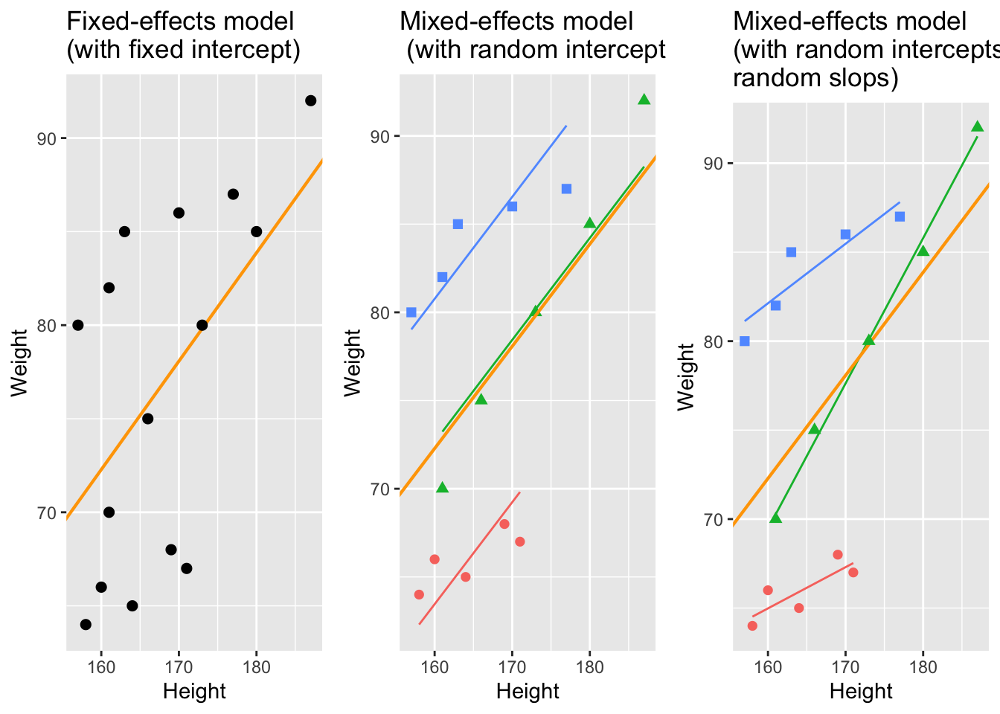
The idea behind regression analysis is expressed formally in the equation below where\(f_{(x)}\) is the y-value we want to predict, \(\alpha\) is the intercept (the point where the regression line crosses the y-axis at x = 0), \(\beta\) is the coefficient (the slope of the regression line), and x is the value of a predictor (e.g. 180cm - if we would like to predict the weight of a person based on their height). The \(\epsilon\) is an error term that reflects the difference between the predicted value and the (actually) observed value (\(\epsilon\) is thus a residual that is important as regressions assume that residuals are, e.g., normally distributed).
\[\begin{equation} f_{(x)} = \alpha + \beta x + \epsilon \end{equation}\]
In other words, to estimate how much some weights who is 180cm tall, we would multiply the coefficient (slope of the line) with 180 (\(x\)) and add the value of the intercept (point where line crosses the y-axis at x = 0).
The equation below represents a formal representation of a mixed-effects regression with varying intercepts (see Winter 2019, 235).
\[\begin{equation} f_{(x)} = \alpha_{i} + \beta x + \epsilon \end{equation}\]
In this random intercept model, each level of a random variable has a different intercept. To predict the value of a data point, we would thus take the appropriate intercept value (the model intercept + the intercept of the random effect) and add the product of the predictor coefficient and the value of x.
Finally, the equation below represents a formal representation of a mixed-effects regression with varying intercepts and varying slopes (see Winter 2019, 235).
\[\begin{equation} f_{(x)} = \alpha_{i} + \beta_{i}x + \epsilon \end{equation}\]
In this last model, each level of a random variable has a different intercept and a different slope. To predict the value of a data point, we would thus take the appropriate intercept value (the model intercept + the intercept of the random effect) and add the coefficient of that random effect level multiplied by the value of x.
Random Effects
Random Effects can be visualized using two parameters: the intercept (the point where the regression line crosses the y-axis at x = 0) and the slope (the acclivity of the regression line). In contrast to fixed-effects models, that have only 1 intercept and one slope (left panel in the figure above), mixed-effects models can therefore have various random intercepts (center panel) or various random slopes, or both, various random intercepts and various random slopes (right panel).
What features do distinguish random and fixed effects?
Random effects represent a higher level variable under which data points are grouped. This implies that random effects must be categorical (or nominal but they a´cannot be continuous!) (see Winter 2019, 236).
Random effects represent a sample of an infinite number of possible levels. For instance, speakers, trials, items, subjects, or words represent a potentially infinite pool of elements from which many different samples can be drawn. Thus, random effects represent a random sample sample. Fixed effects, on the other hand, typically do not represent a random sample but a fixed set of variable levels (e.g. Age groups, or parts-of-speech).
Random effects typically represent many different levels while fixed effects typically have only a few. Zuur, Hilbe, and Ieno (2013) propose that a variable may be used as a fixed effect if it has less than 5 levels while it should be treated as a random effect if it has more than 10 levels. Variables with 5 to 10 levels can be used as both. However, this is a rule of thumb and ignores the theoretical reasons (random sample and nestedness) for considering something as a random effect and it also is at odds with the way that repeated measures are models (namely as mixed effects) although they typically only have very few levels.
Fixed effects represent an effect that if we draw many samples, the effect would be consistent across samples (Winter 2019) while random effects should vary for each new sample that is drawn.
In the following, we will only focus on models with random intercepts because this is the more common method and because including both random intercepts and random slopes requires larger data sets (but have a better fit because intercepts are not forced to be parallel and the lines therefore have a better fit). You should, however, always think about what random effects structure is appropriate for your model - a very recommendable explanation of how to chose which random effects structure is best (and about what the determining factors for this decision are) is give in Winter (2019, 241–44). Also, consider the center and the right plots above to understand what is meant by random intercepts and random slopes.
After adding random intercepts, predictors (or fixed effects) are added to the model (just like with multiple regression). So mixed-effects are called mixed-effects because they contain both random and fixed effects.
In terms of general procedure, random effects are added first, and only after we have ascertained that including random effects is warranted, we test whether including fixed-effects is warranted (Field, Miles, and Field 2012). We test whether including random effects is warranted by comparing a model, that bases its estimates of the depended variable solely on the base intercept (the mean), with a model, that bases its estimates of the dependent variable solely on the intercepts of the random effect. If the random-effect model explains significantly more variance than the simple model without random effect structure, then we continue with the mixed-effects model. In other words, including random effects is justified if they reduce residual deviance.
Example: Preposition Use across Time by Genre
To explore how to implement a mixed-effects model in R we revisit the preposition data that contains relative frequencies of prepositions in English texts written between 1150 and 1913. As a first step, and to prepare our analysis, we load necessary R packages, specify options, and load as well as provide an overview of the data.
# load data
lmmdata <- base::readRDS("tutorials/regression/data/lmd.rda", "rb") %>%
# convert date into a numeric variable
dplyr::mutate(Date = as.numeric(Date))Date | Genre | Text | Prepositions | Region |
|---|---|---|---|---|
1,736 | Science | albin | 166.01 | North |
1,711 | Education | anon | 139.86 | North |
1,808 | PrivateLetter | austen | 130.78 | North |
1,878 | Education | bain | 151.29 | North |
1,743 | Education | barclay | 145.72 | North |
1,908 | Education | benson | 120.77 | North |
1,906 | Diary | benson | 119.17 | North |
1,897 | Philosophy | boethja | 132.96 | North |
1,785 | Philosophy | boethri | 130.49 | North |
1,776 | Diary | boswell | 135.94 | North |
1,905 | Travel | bradley | 154.20 | North |
1,711 | Education | brightland | 149.14 | North |
1,762 | Sermon | burton | 159.71 | North |
1,726 | Sermon | butler | 157.49 | North |
1,835 | PrivateLetter | carlyle | 124.16 | North |
The data set contains the date when the text was written (Date), the genre of the text (Genre), the name of the text (Text), the relative frequency of prepositions in the text (Prepositions), and the region in which the text was written (Region). We now plot the data to get a first impression of its structure.
p1 <- ggplot(lmmdata, aes(x = Date, y = Prepositions)) +
geom_point() +
geom_smooth(method = "lm", se = F, color = "red", linetype = "dashed") +
theme_bw() +
labs(y = "Frequency\n(Prepositions)")
p2 <- ggplot(lmmdata, aes(x = reorder(Genre, -Prepositions), y = Prepositions)) +
geom_boxplot() +
theme_bw() +
theme(axis.text.x = element_text(angle=90)) +
labs(x = "Genre", y = "Frequency\n(Prepositions)")
p3 <- ggplot(lmmdata, aes(Prepositions)) +
geom_histogram() +
theme_bw() +
labs(y = "Count", x = "Frequency (Prepositions)")
gridExtra::grid.arrange(grobs = list(p1, p2, p3), widths = c(1, 1), layout_matrix = rbind(c(1, 1), c(2, 3)))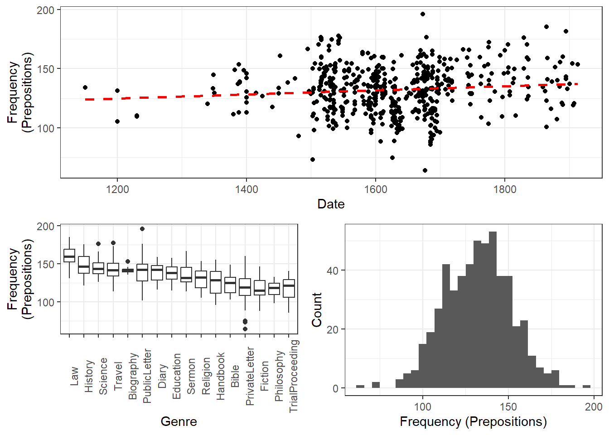
The scatter plot in the upper panel indicates that the use of prepositions has moderately increased over time while the boxplots in the lower left panel show that the genres differ quite substantially with respect to their median frequencies of prepositions per text. Finally, the histogram in the lower right panel show that preposition use is distributed normally with a mean of 132.2 prepositions per text.
p4 <- ggplot(lmmdata, aes(Date, Prepositions)) +
geom_point() +
labs(x = "Year", y = "Prepositions per 1,000 words") +
geom_smooth(method = "lm") +
theme_bw()
p5 <- ggplot(lmmdata, aes(Region, Prepositions)) +
geom_boxplot() +
labs(x = "Region", y = "Prepositions per 1,000 words") +
geom_smooth(method = "lm") +
theme_bw()
gridExtra::grid.arrange(p4, p5, nrow = 1)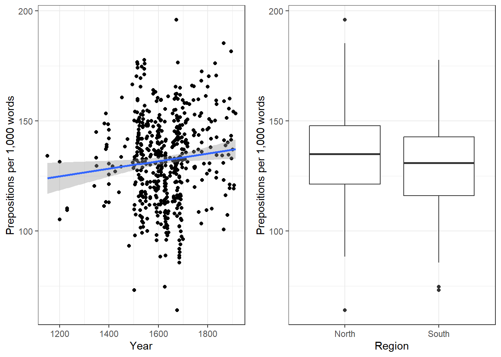
ggplot(lmmdata, aes(Date, Prepositions)) +
geom_point() +
facet_wrap(~ Genre, nrow = 4) +
geom_smooth(method = "lm") +
theme_bw() +
labs(x = "Date of composition", y = "Prepositions per 1,000 words") +
coord_cartesian(ylim = c(0, 220))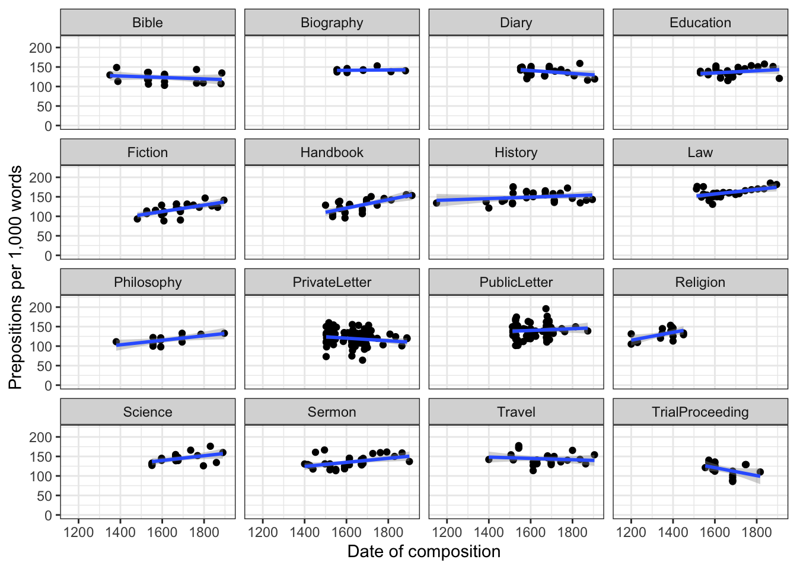
Centering or even scaling numeric variables is useful for later interpretation of regression models: if the date variable were not centered, the regression would show the effects of variables at year 0(!). If numeric variables are centered, other variables are variables are considered relative not to 0 but to the mean of that variable (in this case the mean of years in our data). Centering simply means that the mean of the numeric variable is subtracted from each value.
lmmdata$DateUnscaled <- lmmdata$Date
lmmdata$Date <- scale(lmmdata$Date, scale = F)Date | Genre | Text | Prepositions | Region | DateUnscaled |
|---|---|---|---|---|---|
109.86965 | Science | albin | 166.01 | North | 1,736 |
84.86965 | Education | anon | 139.86 | North | 1,711 |
181.86965 | PrivateLetter | austen | 130.78 | North | 1,808 |
251.86965 | Education | bain | 151.29 | North | 1,878 |
116.86965 | Education | barclay | 145.72 | North | 1,743 |
281.86965 | Education | benson | 120.77 | North | 1,908 |
279.86965 | Diary | benson | 119.17 | North | 1,906 |
270.86965 | Philosophy | boethja | 132.96 | North | 1,897 |
158.86965 | Philosophy | boethri | 130.49 | North | 1,785 |
149.86965 | Diary | boswell | 135.94 | North | 1,776 |
278.86965 | Travel | bradley | 154.20 | North | 1,905 |
84.86965 | Education | brightland | 149.14 | North | 1,711 |
135.86965 | Sermon | burton | 159.71 | North | 1,762 |
99.86965 | Sermon | butler | 157.49 | North | 1,726 |
208.86965 | PrivateLetter | carlyle | 124.16 | North | 1,835 |
We now set up a fixed-effects model with the glm function and a mixed-effects model using the glmer function from the lme4 package (Bates et al. 2015) with Genre as a random effect.
# generate models
m0.glm <- glm(Prepositions ~ 1, family = gaussian, data = lmmdata)
m0.lmer = lmer(Prepositions ~ 1 + (1|Genre), REML = T, data = lmmdata)Now that we have created the base-line models, we will test whether including a random effect structure is mathematically justified. It is important to note here that we are not going to test if including a random effect structure is theoretically motivated but simply if it causes a decrease in variance.
Testing Random Effects
As a first step in the modeling process, we now need to determine whether or not including a random effect structure is justified. We do so by comparing the AIC of the base-line model without random intercepts to the AIC of the model with random intercepts.
AIC(logLik(m0.glm))[1] 4718.19AIC(logLik(m0.lmer))[1] 4497.776The inclusion of a random effect structure with random intercepts is justified as the AIC of the model with random intercepts is substantially lower than the AIC of the model without random intercepts.
While I do not how how to test if including a random effect is justified, there are often situations, which require to test exactly which random effect structure is best. When doing this, it is important to use restricted maximum likelihood (REML = TRUE or method = REML) rather than maximum likelihood (see Pinheiro and Bates 2000; Winter 2019, 226).
# generate models with 2 different random effect structures
ma.lmer = lmer(Prepositions ~ Date + (1|Genre), REML = T, data = lmmdata)
mb.lmer = lmer(Prepositions ~ Date + (1 + Date | Genre), REML = T, data = lmmdata)
# compare models
anova(ma.lmer, mb.lmer, test = "Chisq", refit = F)Data: lmmdata
Models:
ma.lmer: Prepositions ~ Date + (1 | Genre)
mb.lmer: Prepositions ~ Date + (1 + Date | Genre)
npar AIC BIC logLik deviance Chisq Df Pr(>Chisq)
ma.lmer 4 4499.1 4516.3 -2245.6 4491.1
mb.lmer 6 4486.7 4512.4 -2237.3 4474.7 16.449 2 0.0002681 ***
---
Signif. codes: 0 '***' 0.001 '**' 0.01 '*' 0.05 '.' 0.1 ' ' 1The model comparison shows that the model with the more complex random effect structure has a significantly better fit to the data compared with the model with the simpler random effect structure. However, we will continue with the model with the simpler structure because this is just an example.
NOTE
In a real analysis, we would switch to a model with random intercepts and random slopes for Genre because it has a significantly better fit to the data.
Model Fitting
After having determined that including a random effect structure is justified, we can continue by fitting the model and including diagnostics as we go. Including diagnostics in the model fitting process can save time and prevent relying on models which only turn out to be unstable if we would perform the diagnostics after the fact.
We begin fitting our model by adding Date as a fixed effect and compare this model to our mixed-effects base-line model to see if Date improved the model fit by explaining variance and if Date significantly correlates with our dependent variable (this means that the difference between the models is the effect (size) of Date!)
m1.lmer <- lmer(Prepositions ~ (1|Genre) + Date, REML = T, data = lmmdata)
anova(m1.lmer, m0.lmer, test = "Chi")refitting model(s) with ML (instead of REML)Data: lmmdata
Models:
m0.lmer: Prepositions ~ 1 + (1 | Genre)
m1.lmer: Prepositions ~ (1 | Genre) + Date
npar AIC BIC logLik deviance Chisq Df Pr(>Chisq)
m0.lmer 3 4501.9 4514.8 -2248.0 4495.9
m1.lmer 4 4495.0 4512.2 -2243.5 4487.0 8.9296 1 0.002806 **
---
Signif. codes: 0 '***' 0.001 '**' 0.01 '*' 0.05 '.' 0.1 ' ' 1refitting model(s) with ML (instead of REML)The model with Date is the better model (significant p-value and lower AIC). The significant p-value shows that Date correlates significantly with Prepositions (\(\chi\)2(1): 8.9296009, p = 0.00281) . The \(\chi\)2 value here is labeled Chisq and the degrees of freedom are calculated by subtracting the smaller number of DFs from the larger number of DFs.
We now test whether Region should also be part of the final minimal adequate model. The easiest way to add predictors is by using the update function (it saves time and typing).
# generate model
m2.lmer <- update(m1.lmer, .~.+ Region)
# test vifs
car::vif(m2.lmer) Date Region
1.202877 1.202877 # compare models
anova(m2.lmer, m1.lmer, test = "Chi")refitting model(s) with ML (instead of REML)Data: lmmdata
Models:
m1.lmer: Prepositions ~ (1 | Genre) + Date
m2.lmer: Prepositions ~ (1 | Genre) + Date + Region
npar AIC BIC logLik deviance Chisq Df Pr(>Chisq)
m1.lmer 4 4495.0 4512.2 -2243.5 4487.0
m2.lmer 5 4494.6 4516.1 -2242.3 4484.6 2.3934 1 0.1218Three things tell us that Region should not be included:
the AIC does not decrease,
the BIC increases(!), and
the p-value is higher than .05.
This means, that we will continue fitting the model without having Region included. Well… not quite - just as a note on including variables: while Region is not significant as a main effect, it must still be included in a model if it were part of a significant interaction. To test if this is indeed the case, we fit another model with the interaction between Date and Region as predictor.
# generate model
m3.lmer <- update(m1.lmer, .~.+ Region*Date)
# extract vifs
car::vif(m3.lmer) Date Region Date:Region
1.969230 1.203247 1.780009 # compare models
anova(m3.lmer, m1.lmer, test = "Chi")refitting model(s) with ML (instead of REML)Data: lmmdata
Models:
m1.lmer: Prepositions ~ (1 | Genre) + Date
m3.lmer: Prepositions ~ (1 | Genre) + Date + Region + Date:Region
npar AIC BIC logLik deviance Chisq Df Pr(>Chisq)
m1.lmer 4 4495.0 4512.2 -2243.5 4487.0
m3.lmer 6 4496.1 4521.8 -2242.1 4484.1 2.8929 2 0.2354Again, the high p-value and the increase in AIC and BIC show that we have found our minimal adequate model with only contains Date as a main effect. In a next step, we can inspect the final minimal adequate model, i.e. the most parsimonious (the model that explains a maximum of variance with a minimum of predictors).
# inspect results
summary(m1.lmer)Linear mixed model fit by REML ['lmerMod']
Formula: Prepositions ~ (1 | Genre) + Date
Data: lmmdata
REML criterion at convergence: 4491.1
Scaled residuals:
Min 1Q Median 3Q Max
-3.7349 -0.6570 0.0059 0.6613 3.5967
Random effects:
Groups Name Variance Std.Dev.
Genre (Intercept) 159.0 12.61
Residual 228.8 15.12
Number of obs: 537, groups: Genre, 16
Fixed effects:
Estimate Std. Error t value
(Intercept) 1.339e+02 3.247e+00 41.227
Date 1.894e-02 6.324e-03 2.996
Correlation of Fixed Effects:
(Intr)
Date 0.005 Model Diagnostics
We can now evaluate the goodness of fit of the model and check if mathematical requirements and assumptions have been violated. In a first step, we generate diagnostic plots that focus on the random effect structure.
plot(m1.lmer, Genre ~ resid(.), abline = 0 ) # generate diagnostic plots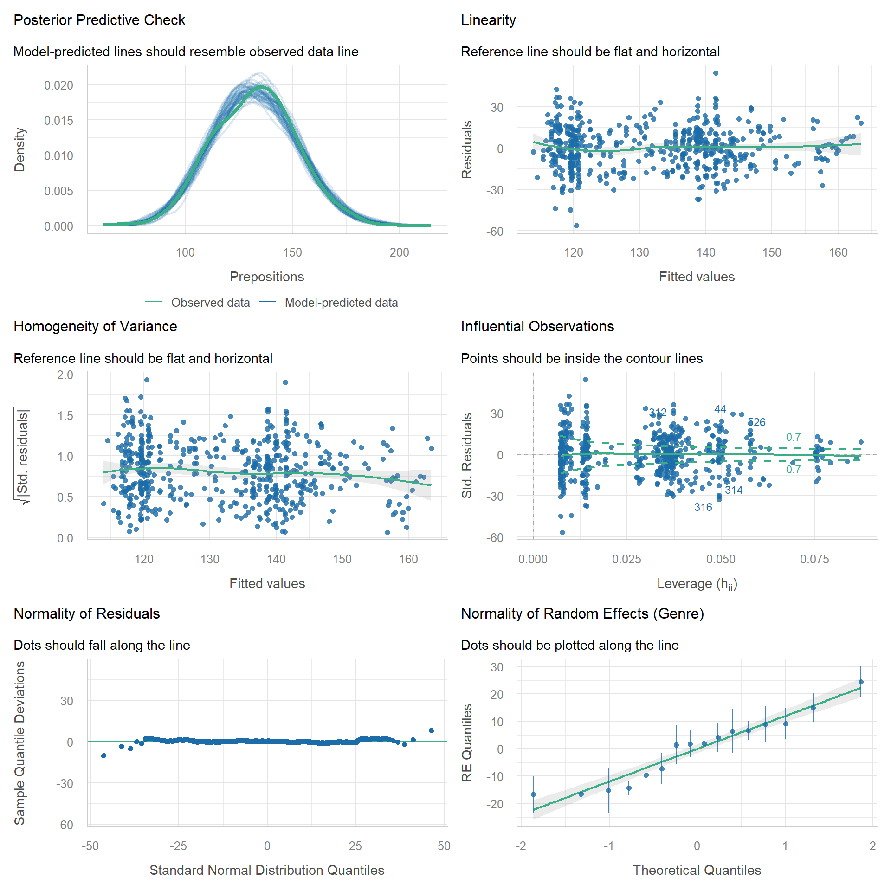
The plot shows that there are some outliers (points outside the boxes) and that the variability within letters is greater than in other genres we therefore examine the genres in isolation standardized residuals versus fitted values (Pinheiro and Bates 2000, 175).
plot(m1.lmer, resid(., type = "pearson") ~ fitted(.) | Genre, id = 0.05,
adj = -0.3, pch = 20, col = "gray40")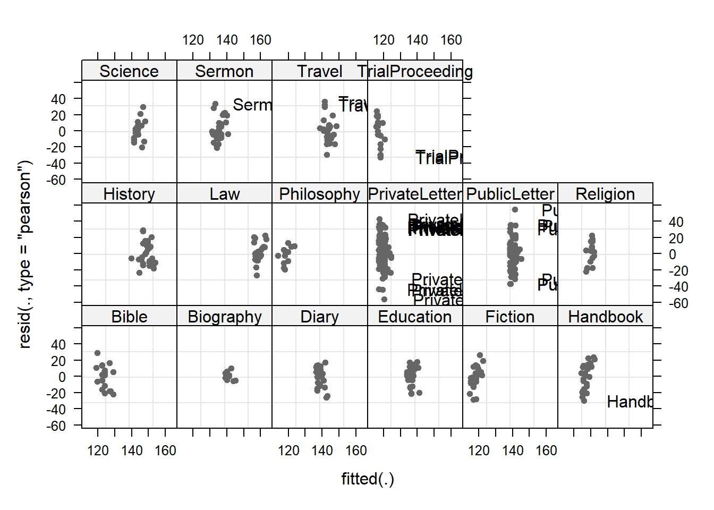
The plot shows the standardized residuals (or Pearson’s residuals) versus fitted values and suggests that there are outliers in the data (the names elements in the plots). To check if these outliers are a cause for concern, we will now use a Levene’s test to check if the variance is distributed homogeneously (homoscedasticity) or whether the assumption of variance homogeneity is violated (due to the outliers).
NOTE
The use of Levene’s test to check if the model is heteroscedastic is generally not recommended as it is too lax when dealing with few observations (because in such cases it does not have the power to identify heteroscedasticity) while it is too harsh when dealing with many observations (when heteroscedasticity typically is not a severe problem).
We use Levene’s test here merely to check if it substantiates the impressions we got from the visual inspection.
# check homogeneity
leveneTest(lmmdata$Prepositions, lmmdata$Genre, center = mean)Warning in leveneTest.default(lmmdata$Prepositions, lmmdata$Genre, center =
mean): lmmdata$Genre coerced to factor.Levene's Test for Homogeneity of Variance (center = mean)
Df F value Pr(>F)
group 15 1.7429 0.03991 *
521
---
Signif. codes: 0 '***' 0.001 '**' 0.01 '*' 0.05 '.' 0.1 ' ' 1The Levene’s test shows that the variance is distributed unevenly across genres which means that we do not simply continue but should either remove problematic data points (outliers) or use a weighing method.
In this case, we create a new model which uses weights to compensate for heterogeneity of variance and thus the influence of outliers - which is an alternative to removing the data points and rerunning the analysis (Pinheiro and Bates 2000, 177). However, to do so, we need to use a different function (the lme function) which means that we have to create two models: the old minimal adequate model and the new minimal adequate model with added weights. After we have created these models, we will compare them to see if including weights has improved the fit.
# generate models
m4.lme = lme(Prepositions ~ Date, random = ~1|Genre, data = lmmdata, method = "ML")
m5.lme <- update(m4.lme, weights = varIdent(form = ~ 1 | Genre))
# compare models
anova(m5.lme, m4.lme) Model df AIC BIC logLik Test L.Ratio p-value
m5.lme 1 19 4485.850 4567.284 -2223.925
m4.lme 2 4 4495.018 4512.162 -2243.509 1 vs 2 39.16818 6e-04The weight model (m5.lme) that uses weights to account for unequal variance is performing significantly better than the model without weights (m4.lme) and we therefore switch to the weight model and inspect its parameters.
# inspect results
summary(m5.lme) Linear mixed-effects model fit by maximum likelihood
Data: lmmdata
AIC BIC logLik
4485.85 4567.284 -2223.925
Random effects:
Formula: ~1 | Genre
(Intercept) Residual
StdDev: 12.26318 14.34203
Variance function:
Structure: Different standard deviations per stratum
Formula: ~1 | Genre
Parameter estimates:
Bible Biography Diary Education Fiction
1.0000000 0.3407199 0.8695296 0.7888614 0.9117189
Handbook History Law Philosophy PrivateLetter
1.0965864 0.9787501 0.7849777 0.7369888 1.1906527
PublicLetter Religion Science Sermon Travel
1.2189292 0.9746463 0.8486117 0.9708734 1.0862351
TrialProceeding
1.2602071
Fixed effects: Prepositions ~ Date
Value Std.Error DF t-value p-value
(Intercept) 133.96401 3.1443483 520 42.60470 0e+00
Date 0.02174 0.0054547 520 3.98588 1e-04
Correlation:
(Intr)
Date 0.004
Standardized Within-Group Residuals:
Min Q1 Med Q3 Max
-3.31906571 -0.67972244 0.01468601 0.69871499 3.10391148
Number of Observations: 537
Number of Groups: 16 We can also use an ANOVA display which is more to the point.
anova(m5.lme) numDF denDF F-value p-value
(Intercept) 1 520 1813.9072 <.0001
Date 1 520 15.8872 1e-04As we did before, we now check, whether the final minimal model (with weights) outperforms an intercept-only base-line model.
# generate base-line model
m0.lme = lme(Prepositions ~ 1, random = ~1|Genre, data = lmmdata, method = "ML", weights = varIdent(form = ~ 1 | Genre))
anova(m0.lme, m5.lme) # test if date is significant Model df AIC BIC logLik Test L.Ratio p-value
m0.lme 1 18 4496.286 4573.434 -2230.143
m5.lme 2 19 4485.850 4567.284 -2223.925 1 vs 2 12.43607 4e-04Our final minimal adequate model with weights performs significantly better than an intercept only base-line model. Before doing the final diagnostics, we well inspect the estimates for the random effect structure to check if there are values which require further inspection (e.g. because they are drastically different from all other values).
# extract estimates and sd for fixed and random effects
intervals(m5.lme, which="fixed") Approximate 95% confidence intervals
Fixed effects:
lower est. upper
(Intercept) 127.7983408 133.96401399 140.12968714
Date 0.0110458 0.02174181 0.03243782The random effect estimates do not show any outliers or drastically increased or decreased values which means that the random effect structure is fine.
Effect Sizes
We will now extract effect sizes (in the example: the effect size of Date) and calculate normalized effect size measures (this effect size measure works for all fixed effects). When you have factorial design, you can take the square root of the squared t-value divided by the t-value squared plus the degrees of freedom to calculate the effect size:
\[\begin{equation} r = \sqrt{ \frac{ t^2}{(t^2 + df) } } = \sqrt{ \frac{ 3.99^2}{(3.99^2 + 520) } } = 0.172 \end{equation}\]
NOTE
Two words of warning though:
br>1. In our case, the effect we are interested in is not factorial but continuous which means that we should not use this effect size measure. We only show this here as an example for how you can calculate the effect size measure r.
2. Only apply this function to main effects that are not involved in interactions as they are meaningless because the amount of variance explained by main effects involved in interactions is unclear (Field, Miles, and Field 2012, 50:641).
sjPlot::tab_model(m5.lme)| Prepositions | |||
|---|---|---|---|
| Predictors | Estimates | CI | p |
| (Intercept) | 133.96 | 127.80 – 140.13 | <0.001 |
| Date | 0.02 | 0.01 – 0.03 | <0.001 |
| Random Effects | |||
| σ2 | 205.69 | ||
| τ00 Genre | 150.39 | ||
| ICC | 0.42 | ||
| N Genre | 16 | ||
| Observations | 537 | ||
| Marginal R2 / Conditional R2 | 0.017 / 0.432 | ||
NOTE
The R2 values of the summary table are incorrect (as indicated by the missing conditional R2 value). The more appropriate conditional and marginal coefficient of determination for generalized mixed-effect models can be extracted using the r.squaredGLMM function from the MuMIn package (Barton 2020).
The marginal R2 (marginal coefficient of determination) represents the variance explained by the fixed effects while the conditional R2 is interpreted as a variance explained by the entire model, including both fixed and random effects (Bartoń 2020).
The respective call for the model is:
# extract R2s
r.squaredGLMM(m1.lmer) R2m R2c
[1,] 0.01219712 0.4172705The effects can be visualized using the plot_model function from the sjPlot package (Lüdecke 2021).
sjPlot::plot_model(m5.lme, type = "pred", terms = c("Date")) +
# show uncentered date rather than centered date
scale_x_continuous(name = "Date",
breaks = seq(-500, 300, 100),
labels = seq(1150, 1950, 100))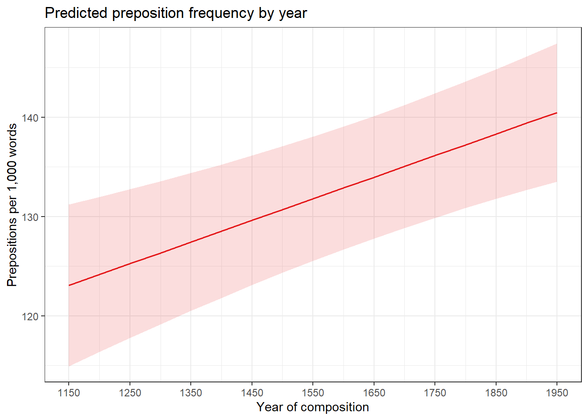
While we have already shown that the effect of Date is significant, it is small which means that the number of prepositions per text does not correlate very strongly with time. This suggests that other factors that are not included in the model also impact the frequency of prepositions (and probably more meaningfully, too).
Before turning to the diagnostics, we will use the fitted (or predicted) and the observed values with a regression line for the predicted values. This will not only show how good the model fit the data but also the direction and magnitude of the effect.
# extract predicted values
lmmdata$Predicted <- predict(m5.lme, lmmdata)
# plot predicted values
ggplot(lmmdata, aes(DateUnscaled, Predicted)) +
facet_wrap(~Genre) +
geom_point(aes(x = DateUnscaled, y = Prepositions), color = "gray80", size = .5) +
geom_smooth(aes(y = Predicted), color = "gray20", linetype = "solid",
se = T, method = "lm") +
guides(color=guide_legend(override.aes=list(fill=NA))) +
theme_set(theme_bw(base_size = 10)) +
theme(legend.position="top", legend.title = element_blank(),
panel.grid.major = element_blank(),
panel.grid.minor = element_blank()) +
xlab("Date of composition")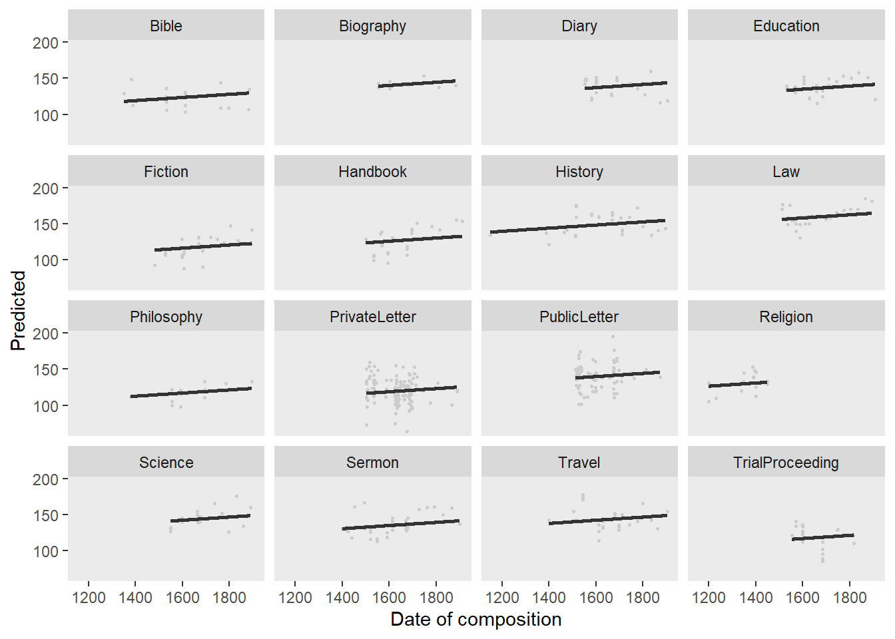
Model Diagnostics
In addition, we generate diagnostic plots. What we wish to see in the diagnostic plots is a cloud of dots in the middle of the window without any structure. What we do not want to see is a funnel-shaped cloud because this indicates an increase of the errors/residuals with an increase of the predictor(s) (because this would indicate heteroscedasticity) (Pinheiro and Bates 2000, 182).
# start plotting
par(mfrow = c(2, 2)) # display plots in 2 rows and 2 columns
plot(m5.lme, pch = 20, col = "black", lty = "dotted"); par(mfrow = c(1, 1))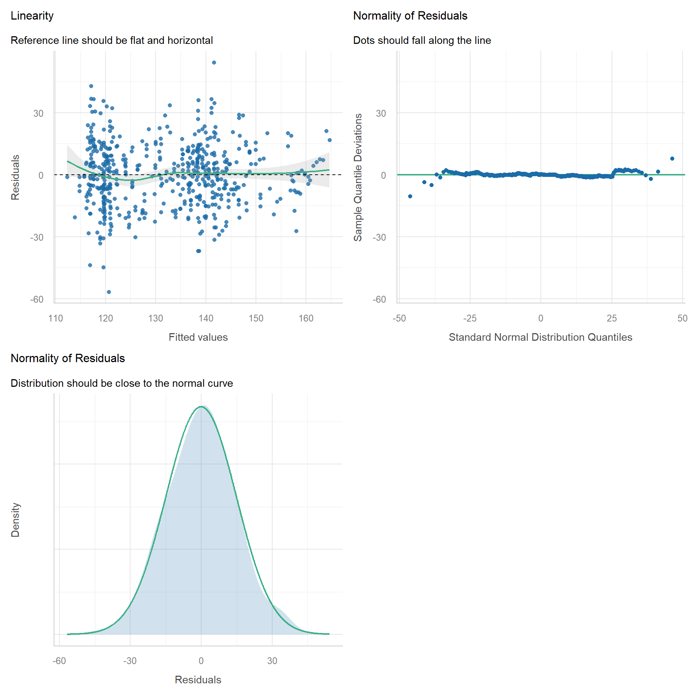
What a wonderful unstructured cloud - the lack of structure tells us that the model is “healthy” and does not suffer from heteroscedasticity. We will now create more diagnostic plots to find potential problems (Pinheiro and Bates 2000, 21).
# fitted values by Genre
plot(m5.lme, form = resid(., type = "p") ~ fitted(.) | Genre, abline = 0,
cex = .5, pch = 20, col = "black")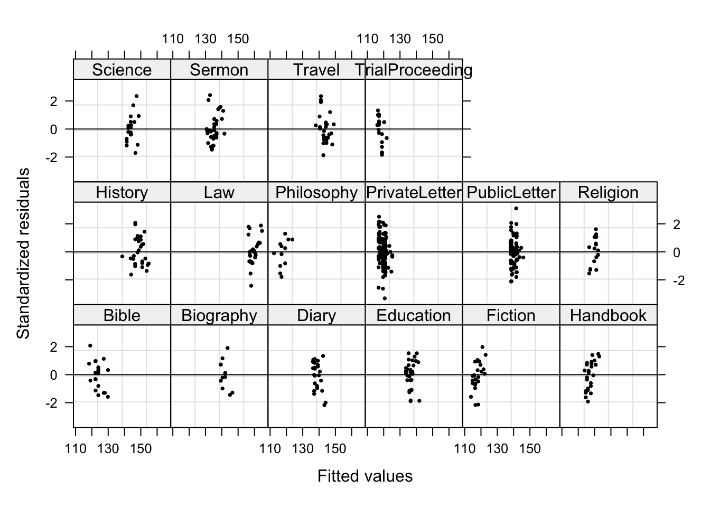
In contrast to the unweight model, no data points are named which indicates that the outliers do no longer have unwarranted influence on the model. Now, we check the residuals of fitted values against observed values (Pinheiro and Bates 2000, 179). What we would like to see is a straight, upwards going line.
# residuals of fitted values against observed
qqnorm(m5.lme, pch = 20, col = "black")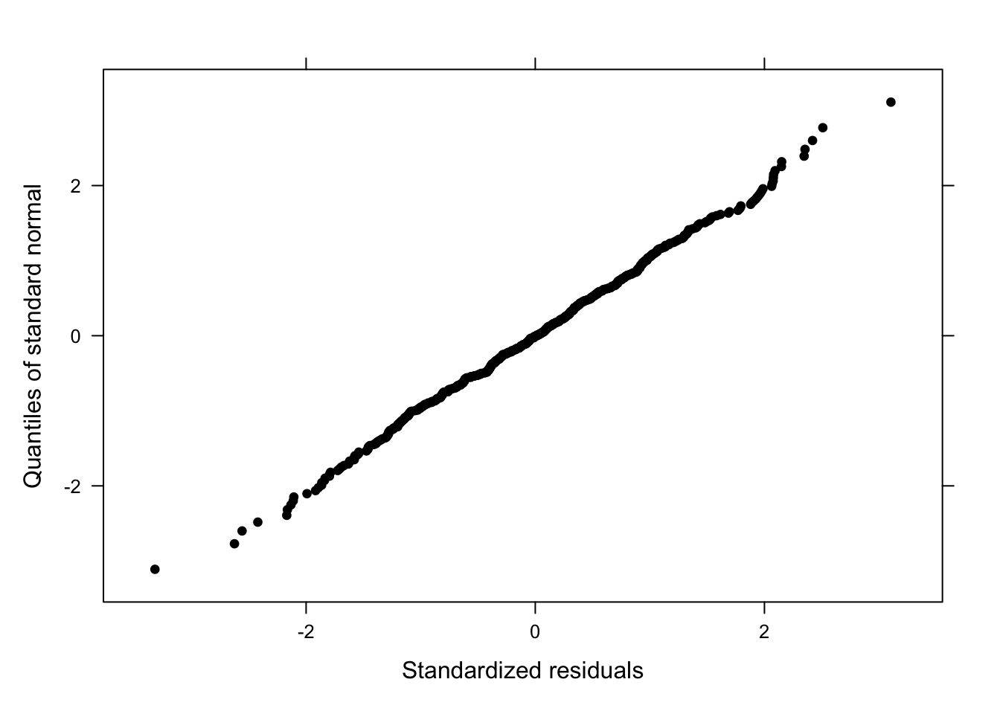
A beautiful, straight line! The qqplot does not indicate any problems. It is, unfortunately, rather common that the dots deviate from the straight line at the very bottom or the very top which means that the model is good at estimating values around the middle of the dependent variable but rather bad at estimating lower or higher values. Next, we check the residuals by “Genre” (Pinheiro and Bates 2000, 179).
# residuals by genre
qqnorm(m5.lme, ~resid(.) | Genre, pch = 20, col = "black" )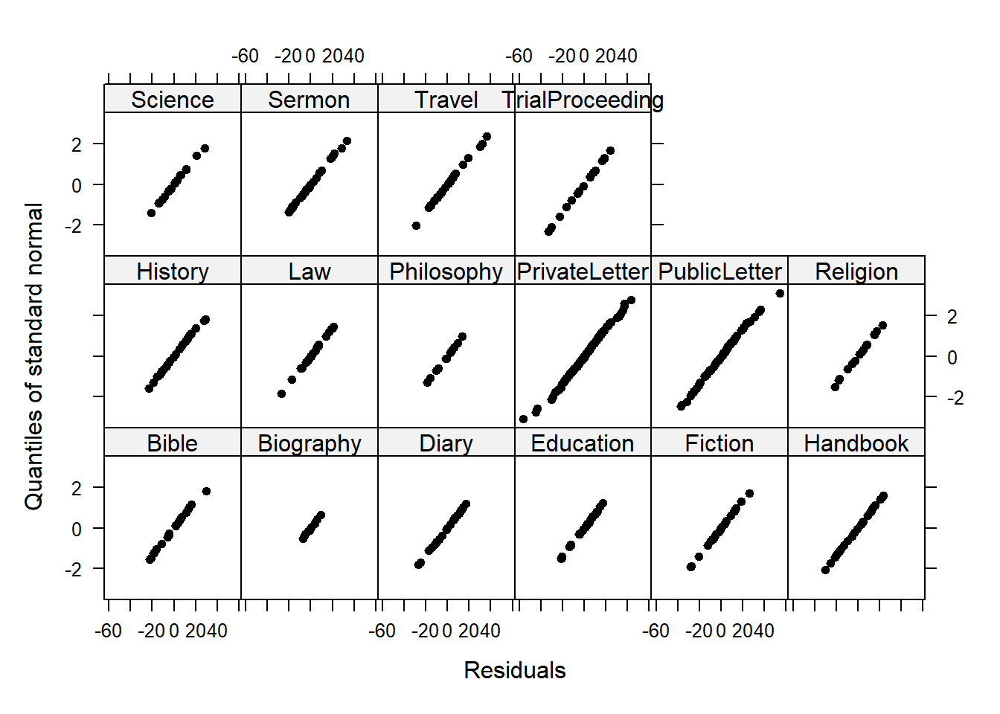
Beautiful straight lines - perfection! Now, we inspect the observed responses versus the within-group fitted values (Pinheiro and Bates 2000, 178).
# observed responses versus the within-group fitted values
plot(m5.lme, Prepositions ~ fitted(.), id = 0.05, adj = -0.3,
xlim = c(80, 220), cex = .8, pch = 20, col = "blue")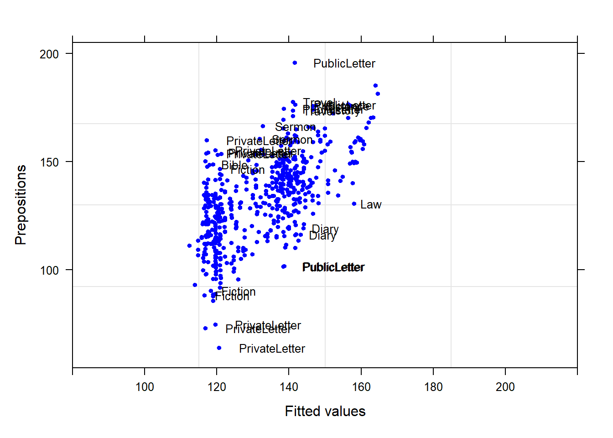
Although some data points are named, the plot does not show any structure, like a funnel, which would have been problematic.
Reporting Results
Before we do the write-up, we have a look at the model summary as this will provide us with at least some of the parameters that we want to report.
summary(m5.lme)Linear mixed-effects model fit by maximum likelihood
Data: lmmdata
AIC BIC logLik
4485.85 4567.284 -2223.925
Random effects:
Formula: ~1 | Genre
(Intercept) Residual
StdDev: 12.26318 14.34203
Variance function:
Structure: Different standard deviations per stratum
Formula: ~1 | Genre
Parameter estimates:
Bible Biography Diary Education Fiction
1.0000000 0.3407199 0.8695296 0.7888614 0.9117189
Handbook History Law Philosophy PrivateLetter
1.0965864 0.9787501 0.7849777 0.7369888 1.1906527
PublicLetter Religion Science Sermon Travel
1.2189292 0.9746463 0.8486117 0.9708734 1.0862351
TrialProceeding
1.2602071
Fixed effects: Prepositions ~ Date
Value Std.Error DF t-value p-value
(Intercept) 133.96401 3.1443483 520 42.60470 0e+00
Date 0.02174 0.0054547 520 3.98588 1e-04
Correlation:
(Intr)
Date 0.004
Standardized Within-Group Residuals:
Min Q1 Med Q3 Max
-3.31906571 -0.67972244 0.01468601 0.69871499 3.10391148
Number of Observations: 537
Number of Groups: 16 sjPlot::tab_model(m5.lme)| Prepositions | |||
|---|---|---|---|
| Predictors | Estimates | CI | p |
| (Intercept) | 133.96 | 127.80 – 140.13 | <0.001 |
| Date | 0.02 | 0.01 – 0.03 | <0.001 |
| Random Effects | |||
| σ2 | 205.69 | ||
| τ00 Genre | 150.39 | ||
| ICC | 0.42 | ||
| N Genre | 16 | ||
| Observations | 537 | ||
| Marginal R2 / Conditional R2 | 0.017 / 0.432 | ||
We can now use the information extracted above to write up a final report:
A mixed-effect linear regression model which contained the genre of texts as random effect was fit to the data in a step-wise-step up procedure. Due to the presence of outliers in the data, weights were included into the model which led to a significantly improved model fit compared to an un-weight model (\(\chi\)2(2): 39.17, p: 0.0006). The final minimal adequate model performed significantly better than an intercept-only base-line model (\(\chi\)2(1): 12.44, p =.0004) and showed that the frequency of prepositions increases significantly but only marginally with the date of composition (Estimate: 0.02, CI: 0.01-0.03, p < .001, marginal R2 = 0.0174, conditional R2 = 0.4324). Neither the region where the text was composed nor a higher order interaction between genre and region significantly correlated with the use of prepositions in the data.
Remarks on Prediction
While the number of intercepts, the model reports, and the way how mixed- and fixed-effects arrive at predictions differ, their predictions are extremely similar and almost identical (at least when dealing with a simple random effect structure). Consider the following example where we create analogous fixed and mixed effect models and plot their predicted frequencies of prepositions per genre across the un-centered date of composition. The predictions of the mixed-effects model are plotted as a solid red line, while the predictions of the fixed-effects model are plotted as dashed blue lines.
# create lm model
m5.lmeunweight <- lm(Prepositions ~ DateUnscaled + Genre, data = lmmdata)
lmmdata$lmePredictions <- fitted(m5.lmeunweight, lmmdata)
m5.lm <- lm(Prepositions ~ DateUnscaled + Genre, data = lmmdata)
lmmdata$lmPredictions <- fitted(m5.lm, lmmdata)
# plot predictions
ggplot(lmmdata, aes(x = DateUnscaled, y = lmePredictions, group = Genre)) +
geom_line(aes(y = lmmdata$lmePredictions), linetype = "solid", color = "red") +
geom_line(aes(y = lmmdata$lmPredictions), linetype = "dashed", color = "blue") +
facet_wrap(~ Genre, nrow = 4) +
theme_bw() +
labs(x = "Date of composition") +
labs(y = "Prepositions per 1,000 words") +
coord_cartesian(ylim = c(0, 220))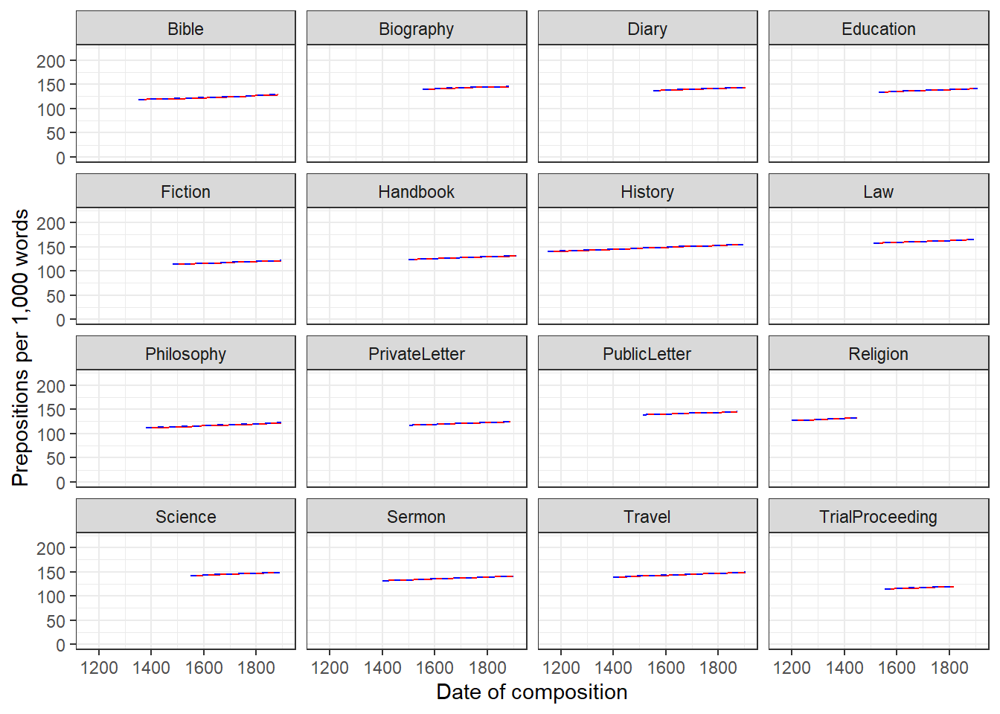
The predictions overlap almost perfectly which means that the predictions of both are almost identical - irrespective of whether genre is part of the mixed or the fixed effects structure.
Mixed-Effects Binomial Logistic Regression
We now turn to an extension of binomial logistic regression: mixed-effects binomial logistic regression. As is the case with linear mixed-effects models logistic mixed effects models have the following advantages over simpler statistical tests:
Mixed-effects models are multivariate, i.e. they test the effect of several predictors simultaneously while controlling for the effect of all other predictors.
Mixed models allow to statistically incorporate within-speaker variability and are thus fit to model hierarchical or nested data structures. This applies if several observations are produced by an individual speaker, for instance.
Mixed-models provide a wealth of diagnostic statistics which enables us to control e.g. multicollinearity, i.e. correlations between predictors, and to test whether conditions or requirements are violated (e.g. homogeneity of variance, etc.).
Major disadvantages of regression modeling are that they are prone to producing high \(\beta\)-errors (see Johnson 2009) and that they require rather large data sets.
Introduction
As is the case with linear mixed-effects models, binomial logistic mixed-effect models are multivariate analyses that treat data points as hierarchical or grouped in some way. In other words, they take into account that the data is nested in the sense that data points are produced by the same speaker or are grouped by some other characteristics. In mixed-models, hierarchical structures are modelled as random effects. If the random effect structure represents speakers then this means that a mixed-model would have a separate intercept and/or slope for each speaker.
Random Effects in linear models can be visualized using two parameters: the intercept (the point where the regression line crosses the y-axis at x = 0) and the slope (the acclivity of the regression line). In contrast to linear mixed-effects models, random effects differ in the position and the slope of the logistic function that is applied to the likelihood of the dependent variable. Random intercepts (upper right panel) or various random slopes (lower left panel), or both, various random intercepts and various random slopes (lower right panel). In the following, we will only focus on models with random intercepts because this is the by far more common method and because including both random intercepts and random slopes requires huge amounts of data. Consider the Figure below to understand what is meant by random intercepts.
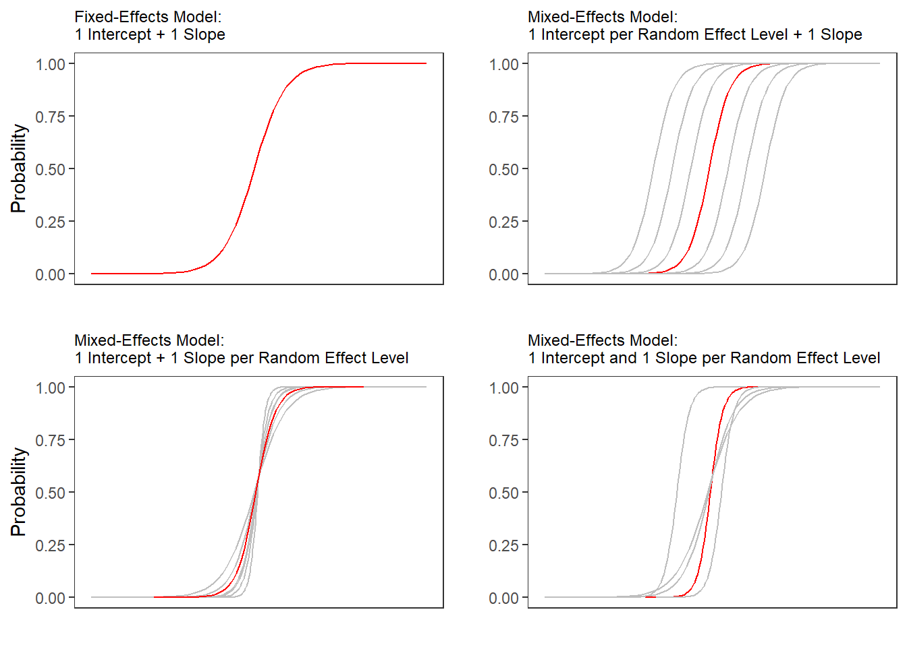
The upper left panel merely shows the logistic curve representing the predictions of a fixed-effects logistic regression with a single intercept and slope. The upper right panel shows the logistic curves representing the predictions of a of a mixed-effects logistic regression with random intercepts for each level of a grouping variable. The lower left panel shows the logistic curves representing the predictions of a mixed-effects logistic regression with one intercept but random slopes for each level of a grouping variable. The lower right panel shows the logistic curves representing the predictions of a mixed-effects logistic regression with random intercepts and random slopes for each level of a grouping variable.
After adding random intercepts, predictors (or fixed effects) are added to the model (just like with multiple regression). So mixed-effects are called mixed-effects because they contain both random and fixed effects.
In terms of general procedure, random effects are added first, and only after we have ascertained that including random effects is warranted, we test whether including fixed-effects is warranted (Field, Miles, and Field 2012). We test whether including random effects is warranted by comparing a model, that bases its estimates of the dependent variable solely on the base intercept, with a model that bases its estimates of the dependent variable solely on the intercepts of the random effect. If the mixed-effects model explains significantly more variance than the fixed-effects model without random effect structure, then we continue with the mixed-effects model. In other words, including random effects is justified.
Example: Discourse LIKE in Irish English
In this example we will investigate which factors correlate with the use of final discourse like (e.g. “The weather is shite, like!”) in Irish English. The data set represents speech units in a corpus that were coded for the speaker who uttered a given speech unit, the gender (Gender: Men versus Women) and age of that speaker (Age: Old versus Young), whether the interlocutors were of the same or a different gender (ConversationType: SameGender versus MixedGender), and whether another final discourse like had been used up to three speech units before (Priming: NoPrime versus Prime), whether or not the speech unit contained an final discourse like (SUFLike: 1 = yes, 0 = no. To begin with, we load the data and inspect the structure of the data set,
# load data
mblrdata <- base::readRDS("tutorials/regression/data/mbd.rda", "rb")ID | Gender | Age | ConversationType | Priming | SUFlike |
|---|---|---|---|---|---|
S1A-061$C | Women | Young | MixedGender | NoPrime | 0 |
S1A-023$B | Women | Young | MixedGender | NoPrime | 0 |
S1A-054$A | Women | Young | SameGender | NoPrime | 0 |
S1A-090$B | Women | Young | MixedGender | NoPrime | 0 |
S1A-009$B | Women | Old | SameGender | Prime | 0 |
S1A-085$E | Men | Young | MixedGender | Prime | 1 |
S1A-003$C | Women | Young | MixedGender | NoPrime | 1 |
S1A-084$C | Women | Young | SameGender | NoPrime | 0 |
S1A-076$A | Women | Young | SameGender | NoPrime | 0 |
S1A-083$D | Men | Old | MixedGender | NoPrime | 1 |
S1A-068$A | Women | Young | SameGender | NoPrime | 0 |
S1A-066$B | Women | Young | SameGender | NoPrime | 0 |
S1A-061$A | Men | Old | MixedGender | NoPrime | 1 |
S1A-049$A | Women | Young | SameGender | NoPrime | 0 |
S1A-022$B | Women | Young | MixedGender | NoPrime | 0 |
As all variables except for the dependent variable (SUFlike) are character strings, we factorize the independent variables.
# def. variables to be factorized
vrs <- c("ID", "Age", "Gender", "ConversationType", "Priming")
# def. vector with variables
fctr <- which(colnames(mblrdata) %in% vrs)
# factorize variables
mblrdata[,fctr] <- lapply(mblrdata[,fctr], factor)
# relevel Age (Young = Reference)
mblrdata$Age <- relevel(mblrdata$Age, "Young")
# order data by ID
mblrdata <- mblrdata %>%
dplyr::arrange(ID)ID | Gender | Age | ConversationType | Priming | SUFlike |
|---|---|---|---|---|---|
S1A-001$A | Men | Old | SameGender | NoPrime | 0 |
S1A-001$A | Men | Old | SameGender | NoPrime | 0 |
S1A-001$A | Men | Old | SameGender | NoPrime | 0 |
S1A-001$A | Men | Old | SameGender | NoPrime | 0 |
S1A-001$A | Men | Old | SameGender | NoPrime | 0 |
S1A-001$A | Men | Old | SameGender | NoPrime | 0 |
S1A-001$A | Men | Old | SameGender | NoPrime | 0 |
S1A-001$A | Men | Old | SameGender | NoPrime | 0 |
S1A-001$B | Women | Old | MixedGender | NoPrime | 0 |
S1A-001$B | Women | Old | MixedGender | NoPrime | 0 |
S1A-001$B | Women | Old | MixedGender | NoPrime | 0 |
S1A-001$B | Women | Old | MixedGender | Prime | 0 |
S1A-001$B | Women | Old | MixedGender | NoPrime | 1 |
S1A-001$B | Women | Old | MixedGender | NoPrime | 0 |
S1A-001$B | Women | Old | MixedGender | NoPrime | 0 |
Before continuing, a few words about the minimum number of random effect levels and the minimum number of observations per random effect level are in order.
While many data points per random variable level increases statistical power and thus to more robust estimates of the random effects (Austin and Leckie 2018), it has been shown that small numbers of observations per random effect variable level do not cause serious bias and it does not negatively affect the estimates of the fixed-effects coefficients (Bell, Ferron, and Kromrey 2008; Clarke 2008; Clarke and Wheaton 2007; Maas and Hox 2005). The minimum number of observations per random effect variable level is therefore 1.
In simulation study, (Bell, Ferron, and Kromrey 2008) tested the impact of random variable levels with only a single observation ranging from 0 to 70 percent. As long as there was a relatively high number of random effect variable levels (500 or more), small numbers of observations had almost no impact on bias and Type 1 error control.
We now plot the data to inspect the relationships within the data set.
ggplot(mblrdata, aes(Gender, SUFlike, color = Priming)) +
facet_wrap(Age~ConversationType) +
stat_summary(fun = mean, geom = "point") +
stat_summary(fun.data = mean_cl_boot, geom = "errorbar", width = 0.2) +
theme_set(theme_bw(base_size = 10)) +
theme(legend.position = "top") +
labs(x = "", y = "Observed Probabilty of discourse like") +
scale_color_manual(values = c("gray20", "gray70"))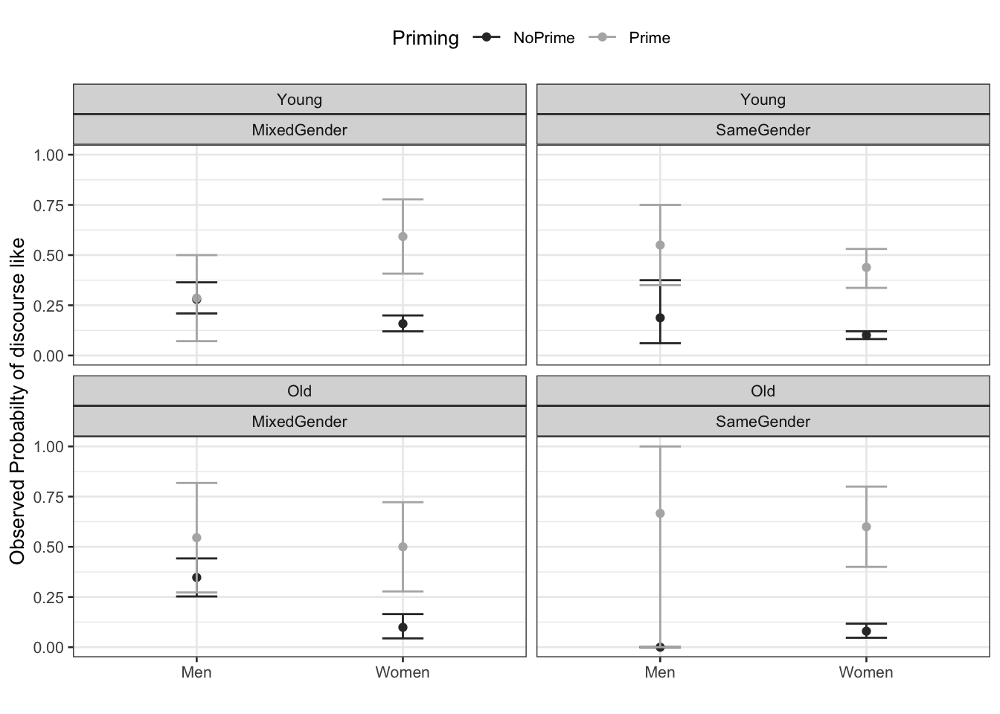
The upper left panel in the Figure above indicates that men use discourse like more frequently than women. The center right panel suggests that priming significantly increases the likelihood of discourse like being used. The center left panel suggests that speakers use discourse like more frequently in mixed-gender conversations. However, the lower right panel indicates an interaction between gender and conversation type as women appear to use discourse like less frequently in same gender conversations while the conversation type does not seem to have an effect on men. After visualizing the data, we will now turn to the model building process.
Model Building
As a first step, we need to define contrasts and use the datadist function to store aspects of our variables that can be accessed later when plotting and summarizing the model. Contrasts define what and how variable levels should be compared and therefore influences how the results of the regression analysis are presented. In this case, we use treatment contrasts which are in-built. Treatment contrasts mean that we assess the significance of levels of a predictor against a baseline which is the reference level of a predictor. Field, Miles, and Field (2012, 50:414–27) and Gries (2021) provide very good and accessible explanations of contrasts and how to manually define contrasts if you would like to know more.
# set options
options(contrasts =c("contr.treatment", "contr.poly"))
mblrdata.dist <- datadist(mblrdata)
options(datadist = "mblrdata.dist")In a next step, we generate fixed-effects minimal base-line models and a base-line mixed-model using the glmer function with a random intercept for ID (a lmer-object of the final minimal adequate model will be created later).
# baseline model glm
m0.glm = glm(SUFlike ~ 1, family = binomial, data = mblrdata)
# base-line mixed-model
m0.glmer = glmer(SUFlike ~ (1|ID), data = mblrdata, family = binomial) Testing the Random Effect
Now, we check if including the random effect is permitted by comparing the AICs from the glm to AIC from the glmer model. If the AIC of the glmer object is smaller than the AIC of the glm object, then this indicates that including random intercepts is justified.
aic.glmer <- AIC(logLik(m0.glmer))
aic.glm <- AIC(logLik(m0.glm))
aic.glmer; aic.glm[1] 1828.492[1] 1838.173The AIC of the glmer object is smaller which shows that including the random intercepts is justified. To confirm whether the AIC reduction is sufficient for justifying the inclusion of a random-effect structure, we also test whether the mixed-effects minimal base-line model explains significantly more variance by applying a Model Likelihood Ratio Test to the fixed- and the mixed effects minimal base-line models.
# test random effects
null.id = -2 * logLik(m0.glm) + 2 * logLik(m0.glmer)
pchisq(as.numeric(null.id), df=1, lower.tail=F) [1] 0.0006313896# sig m0.glmer better than m0.glmThe p-value of the Model Likelihood Ratio Test is lower than .05 which shows that the inclusion of the random-effects structure is warranted. We can now continue with the model fitting process.
Model Fitting
The next step is to fit the model which means that we aim to find the best model, i.e. the minimal adequate model. In this case, we will use the glmulti package to find the model with the lowest Bayesian Information Criterion (BIC) of all possible models. We add ´control = glmerControl(optimizer = “bobyqa”)´ to avoid unnecessary failures to converge.
# wrapper function for linear mixed-models
glmer.glmulti <- function(formula,data, random="",...){
glmer(paste(deparse(formula),random),
family = binomial,
data=data,
control=glmerControl(optimizer="bobyqa"), ...)
}
# define formula
form_glmulti = as.formula(paste("SUFlike ~ Gender + Age + ConversationType + Priming"))
# multi selection for glmer
mfit <- glmulti(form_glmulti,random="+(1 | ID)",
data = mblrdata, method = "h", fitfunc = glmer.glmulti,
crit = "bic", intercept = TRUE, marginality = FALSE, level = 2)Initialization...
TASK: Exhaustive screening of candidate set.
Fitting...
After 50 models:
Best model: SUFlike~1+Gender+ConversationType+Priming
Crit= 1696.58773399693
Mean crit= 1753.96253323414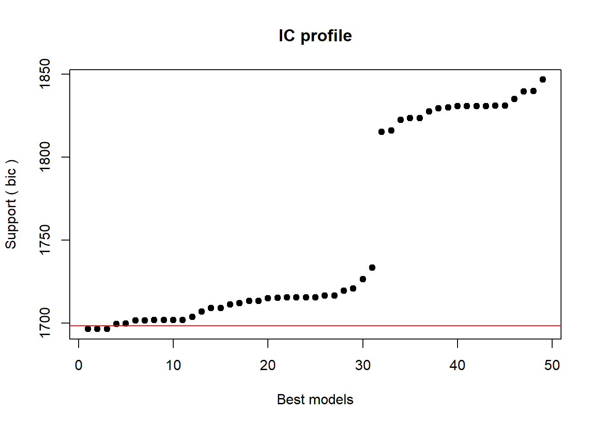
After 100 models:
Best model: SUFlike~1+Gender+ConversationType+Priming
Crit= 1696.58773399693
Mean crit= 1731.89001011592
Completed.We extract the best 5 models (best is here defined as the models with the lowest BIC).
# extract best models
top <- weightable(mfit)
top <- top[1:5,]
# inspect top 5 models
top model
1 SUFlike ~ 1 + Gender + ConversationType + Priming
2 SUFlike ~ 1 + Gender + ConversationType + Priming + Priming:Gender
3 SUFlike ~ 1 + Gender + ConversationType + Priming + Priming:Gender + Priming:ConversationType
4 SUFlike ~ 1 + Gender + Priming + Priming:Gender
5 SUFlike ~ 1 + Gender + ConversationType + Priming + Priming:ConversationType
bic weights
1 1696.588 0.25679010
2 1696.770 0.23443497
3 1696.770 0.23443497
4 1699.625 0.05624947
5 1699.839 0.05052593The best model is has the formula SUFlike ~ 1 + Gender + ConversationType + Priming and we take this to be our final minimal adequate model, i.e. the most parsimonious model (the model which explains the relatively most variance with lowest number of predictors). Hence, we define our final minimal model and check its output.
mlr.glmer <- glmer(SUFlike ~ (1 | ID) + Gender + ConversationType + Priming,
family = binomial,
control=glmerControl(optimizer="bobyqa"),
data = mblrdata)
# inspect final minimal adequate model
summary(mlr.glmer, corr = F)Generalized linear mixed model fit by maximum likelihood (Laplace
Approximation) [glmerMod]
Family: binomial ( logit )
Formula: SUFlike ~ (1 | ID) + Gender + ConversationType + Priming
Data: mblrdata
Control: glmerControl(optimizer = "bobyqa")
AIC BIC logLik deviance df.resid
1668.6 1696.6 -829.3 1658.6 1995
Scaled residuals:
Min 1Q Median 3Q Max
-1.5794 -0.4155 -0.3304 -0.3121 3.2479
Random effects:
Groups Name Variance Std.Dev.
ID (Intercept) 0.08375 0.2894
Number of obs: 2000, groups: ID, 208
Fixed effects:
Estimate Std. Error z value Pr(>|z|)
(Intercept) -1.0674 0.1492 -7.155 8.36e-13 ***
GenderWomen -0.6429 0.1753 -3.667 0.000246 ***
ConversationTypeSameGender -0.5364 0.1488 -3.605 0.000313 ***
PrimingPrime 1.8662 0.1633 11.432 < 2e-16 ***
---
Signif. codes: 0 '***' 0.001 '**' 0.01 '*' 0.05 '.' 0.1 ' ' 1We now test whether the final minimal model performs significantly better than the minimal base-line model, and print the regression summary.
# final model better than base-line model
sigfit <- anova(mlr.glmer, m0.glmer, test = "Chi")
# inspect
sigfitData: mblrdata
Models:
m0.glmer: SUFlike ~ (1 | ID)
mlr.glmer: SUFlike ~ (1 | ID) + Gender + ConversationType + Priming
npar AIC BIC logLik deviance Chisq Df Pr(>Chisq)
m0.glmer 2 1828.5 1839.7 -912.25 1824.5
mlr.glmer 5 1668.6 1696.6 -829.29 1658.6 165.91 3 < 2.2e-16 ***
---
Signif. codes: 0 '***' 0.001 '**' 0.01 '*' 0.05 '.' 0.1 ' ' 1# inspect final minimal adequate model
print(mlr.glmer, corr = F)Generalized linear mixed model fit by maximum likelihood (Laplace
Approximation) [glmerMod]
Family: binomial ( logit )
Formula: SUFlike ~ (1 | ID) + Gender + ConversationType + Priming
Data: mblrdata
AIC BIC logLik deviance df.resid
1668.5832 1696.5877 -829.2916 1658.5832 1995
Random effects:
Groups Name Std.Dev.
ID (Intercept) 0.2894
Number of obs: 2000, groups: ID, 208
Fixed Effects:
(Intercept) GenderWomen
-1.0674 -0.6429
ConversationTypeSameGender PrimingPrime
-0.5364 1.8662 Visualizing Effects
We visualize the effects here by showing the probability of discourse like based on the predicted values.
plot_model(mlr.glmer, type = "pred", terms = c("Gender", "Priming", "ConversationType"))You are calculating adjusted predictions on the population-level (i.e.
`type = "fixed"`) for a *generalized* linear mixed model.
This may produce biased estimates due to Jensen's inequality. Consider
setting `bias_correction = TRUE` to correct for this bias.
See also the documentation of the `bias_correction` argument.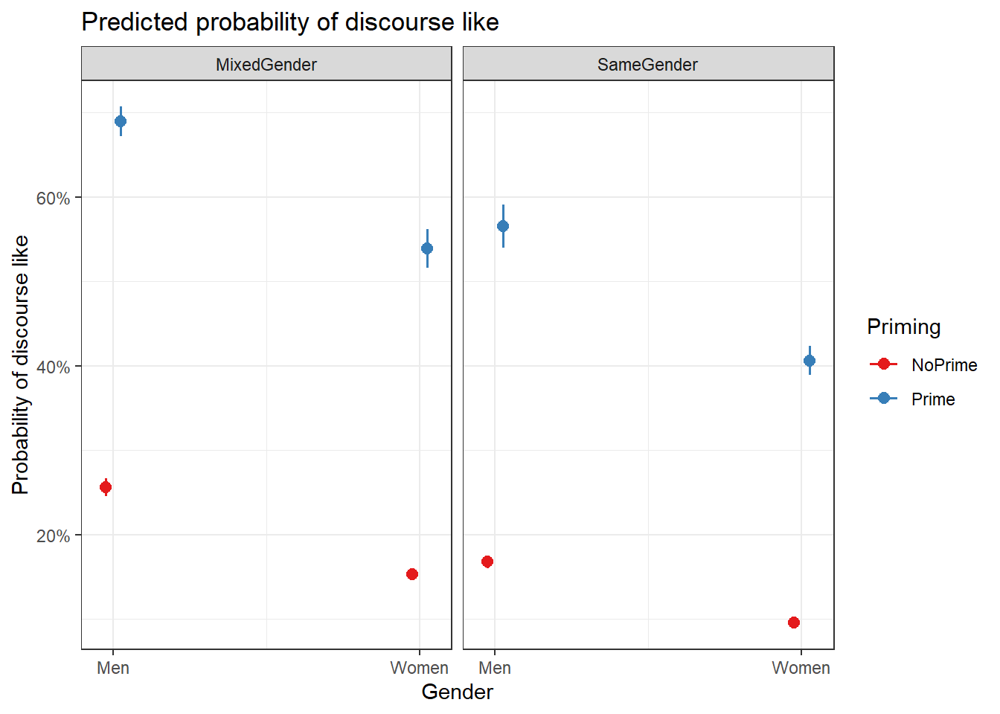
We can see that discourse like is more likely to surface in primed contexts and among males. In conversations with both men and women, speakers use discourse like slightly less than in mixed conversations.
Extracting Model Fit Parameters
We now extract model fit parameters (Baayen 2008, 281).
library(Hmisc) # Ensure the package is loaded
probs = 1/(1+exp(-fitted(mlr.glmer)))
probs = binomial()$linkinv(fitted(mlr.glmer))
somers2(probs, as.numeric(mblrdata$SUFlike))The two lines that start with probs are simply two different ways to do the same thing (you only need one of these).
The model fit parameters indicate a suboptimal fit. Both the C-value and Somers’s Dxy show poor fit between predicted and observed occurrences of discourse like. If the C-value is 0.5, the predictions are random, while the predictions are perfect if the C-value is 1. C-values above 0.8 indicate real predictive capacity (Baayen 2008, 204). Somers’ Dxy is a value that represents a rank correlation between predicted probabilities and observed responses. Somers’ Dxy values range between 0, which indicates complete randomness, and 1, which indicates perfect prediction (Baayen 2008, 204). The C.value output of the somers2 function suggests that the model has some predictive and explanatory power, but not at an optimal level. We will now perform the model diagnostics.
Model Diagnostics
We begin the model diagnostics by generating a diagnostic that plots the fitted or predicted values against the residuals.
plot(mlr.glmer, pch = 20, col = "black", lty = "dotted")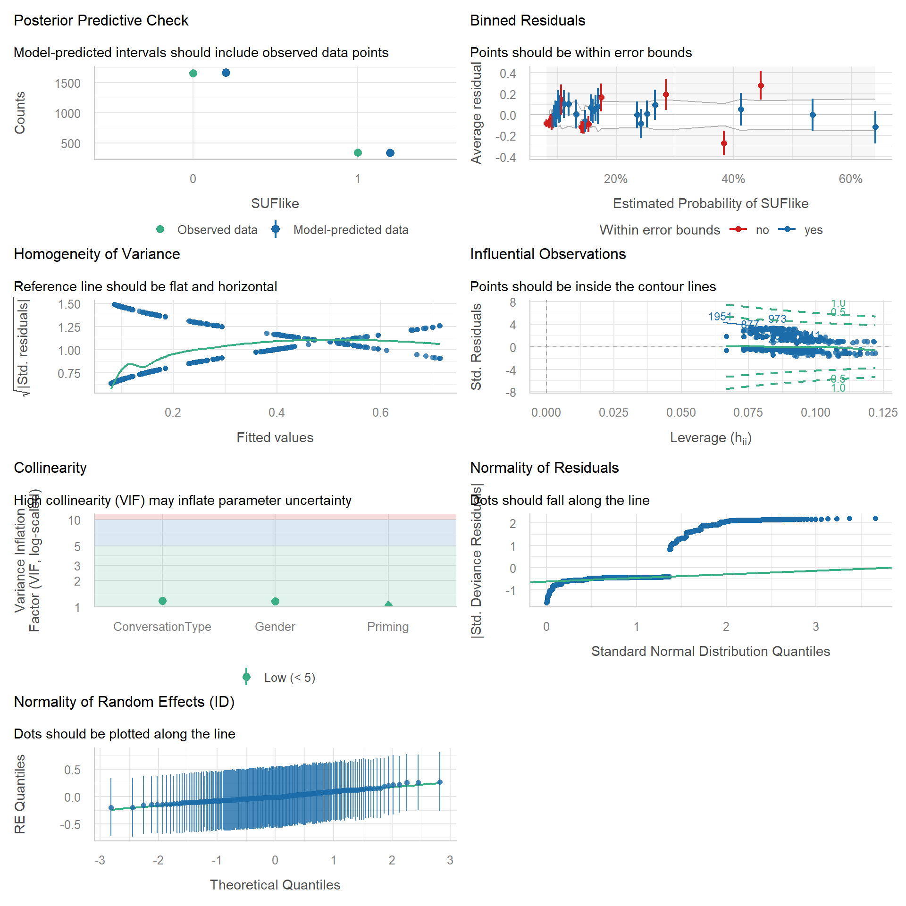
As a final step, we summarize our findings in tabulated form.
# summarize final model
sjPlot::tab_model(mlr.glmer)| SUFlike | |||
|---|---|---|---|
| Predictors | Odds Ratios | CI | p |
| (Intercept) | 0.34 | 0.26 – 0.46 | <0.001 |
| Gender [Women] | 0.53 | 0.37 – 0.74 | <0.001 |
| ConversationType [SameGender] |
0.58 | 0.44 – 0.78 | <0.001 |
| Priming [Prime] | 6.46 | 4.69 – 8.90 | <0.001 |
| Random Effects | |||
| σ2 | 3.29 | ||
| τ00 ID | 0.08 | ||
| ICC | 0.02 | ||
| N ID | 208 | ||
| Observations | 2000 | ||
| Marginal R2 / Conditional R2 | 0.131 / 0.152 | ||
We can use the reports package (Makowski et al. 2021) to summarize the analysis.
report::report(mlr.glmer)We fitted a logistic mixed model (estimated using ML and BOBYQA optimizer) to
predict SUFlike with Gender, ConversationType and Priming (formula: SUFlike ~
Gender + ConversationType + Priming). The model included ID as random effect
(formula: ~1 | ID). The model's total explanatory power is moderate
(conditional R2 = 0.15) and the part related to the fixed effects alone
(marginal R2) is of 0.13. The model's intercept, corresponding to Gender = Men,
ConversationType = MixedGender and Priming = NoPrime, is at -1.07 (95% CI
[-1.36, -0.78], p < .001). Within this model:
- The effect of Gender [Women] is statistically significant and negative (beta
= -0.64, 95% CI [-0.99, -0.30], p < .001; Std. beta = -0.64, 95% CI [-0.99,
-0.30])
- The effect of ConversationType [SameGender] is statistically significant and
negative (beta = -0.54, 95% CI [-0.83, -0.24], p < .001; Std. beta = -0.54, 95%
CI [-0.83, -0.24])
- The effect of Priming [Prime] is statistically significant and positive (beta
= 1.87, 95% CI [1.55, 2.19], p < .001; Std. beta = 1.87, 95% CI [1.55, 2.19])
Standardized parameters were obtained by fitting the model on a standardized
version of the dataset. 95% Confidence Intervals (CIs) and p-values were
computed using a Wald z-distribution approximation.We can use this output to write up a final report:
We can use this output to write up a final report:
We fitted a logistic mixed model to predict the use of discourse like. The model included speakers as random effect (formula: ~1 | ID). The model’s total explanatory power is moderate (conditional R2 = 0.15) and the part related to the fixed effects alone (marginal R2) is of 0.13.
Regarding fixed effects, the model reported that * women use discourse like statistically less compared to men (beta = -0.64 [-0.99, -0.30], p < .001; Std. beta = -0.64 [-0.99, -0.30]) * speakers in conversations with other speakers of the same gender use discourse like significantly less compared to thier use in mixed-gender conversations (beta = -0.54 [-0.83, -0.24], p < .001; Std. beta = -0.54 [-0.83, -0.24]) * Priming is significantly positively correlated with the use of discourse like (beta = 1.87 [1.55, 2.19], p < .001; Std. beta = 1.87 [1.55, 2.19])
Mixed-Effects (Quasi-)Poisson and Negative-Binomial Regression
Like fixed-effects Poisson models, mixed-effects Poisson models take counts as dependent variables. The data for this analysis was collected on three separate evenings (Trial). The number of the filler uhm (UHM) was counted in two-minute conversations that were either in English, German, Russian, or Mandarin (Language). In addition, the number of shots that speakers drank before they talked was recorded (Shots).
# load data
countdata <- base::readRDS("tutorials/regression/data/cld.rda", "rb")# inspect data
countdata %>%
as.data.frame() %>%
head(15) %>%
flextable() %>%
flextable::set_table_properties(width = .75, layout = "autofit") %>%
flextable::theme_zebra() %>%
flextable::fontsize(size = 12) %>%
flextable::fontsize(size = 12, part = "header") %>%
flextable::align_text_col(align = "center") %>%
flextable::set_caption(caption = "First 15 rows of the countdata data.") %>%
flextable::border_outer()ID | Trial | Language | Gender | UHM | Shots |
|---|---|---|---|---|---|
1 | 3 | Russian | Man | 0 | 0 |
2 | 3 | Russian | Man | 0 | 0 |
3 | 3 | German | Man | 0 | 5 |
4 | 1 | German | Man | 0 | 3 |
5 | 1 | German | Woman | 2 | 6 |
6 | 3 | German | Man | 1 | 5 |
7 | 1 | Mandarin | Man | 1 | 1 |
8 | 3 | German | Woman | 0 | 4 |
9 | 3 | Russian | Woman | 0 | 0 |
10 | 2 | German | Man | 0 | 2 |
11 | 3 | Russian | Man | 0 | 1 |
12 | 2 | German | Man | 0 | 1 |
13 | 3 | Russian | Woman | 0 | 1 |
14 | 2 | Russian | Woman | 4 | 4 |
15 | 2 | English | Man | 0 | 4 |
Since the data contains character variables, we need to factorize the data before we can analyse it further and we also remove the ID column.
# factorize variables
countdata <- countdata %>%
dplyr::select(-ID) %>%
dplyr::mutate_if(is.character, factor)# inspect data
countdata %>%
as.data.frame() %>%
head(15) %>%
flextable() %>%
flextable::set_table_properties(width = .75, layout = "autofit") %>%
flextable::theme_zebra() %>%
flextable::fontsize(size = 12) %>%
flextable::fontsize(size = 12, part = "header") %>%
flextable::align_text_col(align = "center") %>%
flextable::set_caption(caption = "First 15 rows of the countdata data.") %>%
flextable::border_outer()Trial | Language | Gender | UHM | Shots |
|---|---|---|---|---|
3 | Russian | Man | 0 | 0 |
3 | Russian | Man | 0 | 0 |
3 | German | Man | 0 | 5 |
1 | German | Man | 0 | 3 |
1 | German | Woman | 2 | 6 |
3 | German | Man | 1 | 5 |
1 | Mandarin | Man | 1 | 1 |
3 | German | Woman | 0 | 4 |
3 | Russian | Woman | 0 | 0 |
2 | German | Man | 0 | 2 |
3 | Russian | Man | 0 | 1 |
2 | German | Man | 0 | 1 |
3 | Russian | Woman | 0 | 1 |
2 | Russian | Woman | 4 | 4 |
2 | English | Man | 0 | 4 |
After the data is factorized, we can visualize the data.
countdata %>%
# prepare data
dplyr::select(Language, Shots) %>%
dplyr::group_by(Language) %>%
dplyr::mutate(Mean = round(mean(Shots), 1)) %>%
dplyr::mutate(SD = round(sd(Shots), 1)) %>%
# start plot
ggplot(aes(Language, Shots, color = Language, fill = Language)) +
geom_violin(trim=FALSE, color = "gray20")+
geom_boxplot(width=0.1, fill="white", color = "gray20") +
geom_text(aes(y=-4,label=paste("mean: ", Mean, sep = "")), size = 3, color = "black") +
geom_text(aes(y=-5,label=paste("SD: ", SD, sep = "")), size = 3, color = "black") +
scale_fill_manual(values=rep("grey90",4)) +
theme_set(theme_bw(base_size = 10)) +
theme(legend.position="none", legend.title = element_blank(),
panel.grid.major = element_blank(),
panel.grid.minor = element_blank()) +
ylim(-5, 15) +
labs(x = "Language", y = "Shots")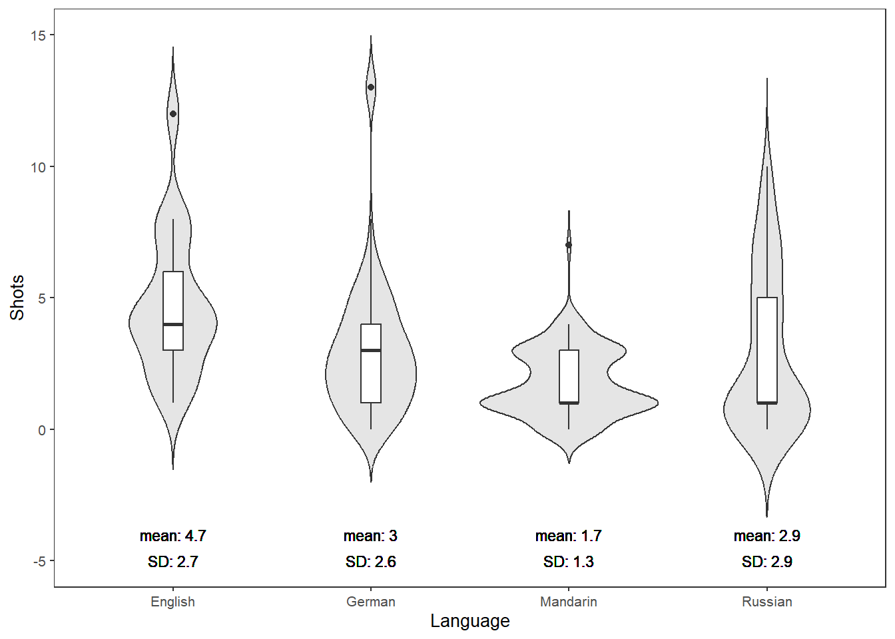
The violin plots show that the English speakers drank more shots than speakers of other languages with Mandarin speakers drinking the fewest shots.
In the present case, we will a Boruta variable selection procedure to streamline the model fitting process. Thus, before fitting the model, we will test which variables have any kind of relationship with the dependent variable and therefore deserve to be evaluated in the regression modeling. As this is just an example, we will only consider variables which are deemed important and disregard both unimportant and tentative variables. We start the Boruta analysis by setting a seed and running an initial Boruta analysis.
# perform variable selection
set.seed(20191220)
boruta <- Boruta(UHM ~.,data=countdata)
print(boruta)Boruta performed 99 iterations in 10.96507 secs.
1 attributes confirmed important: Shots;
1 attributes confirmed unimportant: Gender;
2 tentative attributes left: Language, Trial;As only Shots is confirmed as important, we will only check for the effect of Shots and include Language as a random effect in the regression modeling. Including Language as a random effect is probably not justified statistically (given that the Boruta analysis showed that it only has a tentative effect) but for theoretical reasons as the speakers are nested into Languages. Before we start with the modeling, however, we proceed by checking if the data does indeed approximate a Poisson distribution.
# output the results
gf = goodfit(countdata$UHM,type= "poisson", method= "ML")
plot(gf, main="Count data vs Poisson distribution")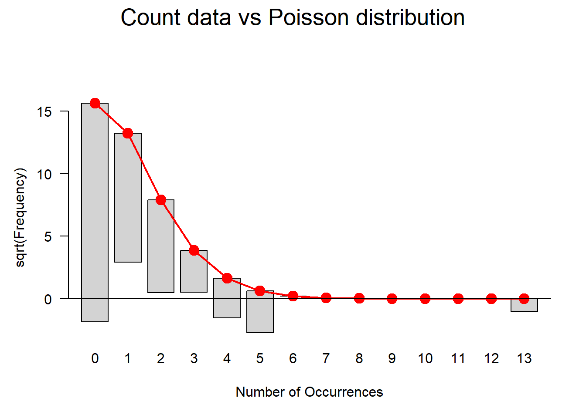
The data does not perfectly match a distribution that would be expected if the data approximated a Poisson distribution. We will use a goodness-of-fit test to check if the data does indeed diverge significantly from being Poisson distributed. If the p-values of the goodness-of-fit test is smaller than .05, then the distribution of the data differs significantly from a Poisson distribution and, given the visualization is likely over-dispersed.
In case of overdispersion, we may have to use a quasi-Poisson or, even better, a negative binomial model but we will, for now continue with the Poisson model and perform diagnostics later to check if we have to switch to a more robust method. One effect of overdispersion is that the standard errors of a model are biased and quasi-Poisson models scale the standard errors to compensate bias. However, Zuur, Hilbe, and Ieno (2013) suggest to use negative-binomial model instead. This is so because the scaling of the standard errors performed by quasi-Poisson models only affects the significance of coefficients (the p-values) but it does not affect the coefficients which, however, may be affected themselves by overdispersion. Thus, the coefficients of Poisson as well as quasi-Poisson models (which are identical) may be unreliable when dealing with overdispersion. Negative binomial models, in contrast, include an additional dispersion or heterogeneity parameter which accommodates overdispersion better than merely scaling the standard errors (see Zuur, Hilbe, and Ieno 2013, 21).
summary(gf)
Goodness-of-fit test for poisson distribution
X^2 df P(> X^2)
Likelihood Ratio 153.4228 5 2.493367e-31The p-value is indeed smaller than .05 which means that we should indeed use a negative-binomial model rather than a Poisson model. We will ignore this, for now, and proceed to fit a Poisson mixed-effects model and check what happens if a Poisson model is fit to over-dispersed data.
Mixed-Effects Poisson Regression
In a first step, we create mixed-effect intercept-only baseline models and then test if including “Shots” significantly improves model fit and, thus, has a significant impact on the number of uhms.
# base-line mixed-model
m0.glmer = glmer(UHM ~ 1 + (1 | Language), data = countdata, family = poisson,
control=glmerControl(optimizer="bobyqa"))
# add Shots
m1.glmer <- update(m0.glmer, .~.+ Shots)
Anova(m1.glmer, test = "Chi") Analysis of Deviance Table (Type II Wald chisquare tests)
Response: UHM
Chisq Df Pr(>Chisq)
Shots 321.25 1 < 2.2e-16 ***
---
Signif. codes: 0 '***' 0.001 '**' 0.01 '*' 0.05 '.' 0.1 ' ' 1The ANOVA confirms that Shots have a significant impact on the number of instances of uhm. However, we get the warning that the fitted mixed model is (almost / near) singular. In such cases, the model should not be reported. As this is only an example, we will continue by having a look at the model summary.
summary(m1.glmer)Generalized linear mixed model fit by maximum likelihood (Laplace
Approximation) [glmerMod]
Family: poisson ( log )
Formula: UHM ~ (1 | Language) + Shots
Data: countdata
Control: glmerControl(optimizer = "bobyqa")
AIC BIC logLik deviance df.resid
1041.8 1054.5 -517.9 1035.8 497
Scaled residuals:
Min 1Q Median 3Q Max
-1.5096 -0.6664 -0.5930 0.5861 4.3386
Random effects:
Groups Name Variance Std.Dev.
Language (Intercept) 0 0
Number of obs: 500, groups: Language, 4
Fixed effects:
Estimate Std. Error z value Pr(>|z|)
(Intercept) -1.27892 0.08933 -14.32 <2e-16 ***
Shots 0.23363 0.01303 17.92 <2e-16 ***
---
Signif. codes: 0 '***' 0.001 '**' 0.01 '*' 0.05 '.' 0.1 ' ' 1
Correlation of Fixed Effects:
(Intr)
Shots -0.806
optimizer (bobyqa) convergence code: 0 (OK)
boundary (singular) fit: see help('isSingular')The model summary confirms that the number of shots does have a significantly positive effect on the number of occurrences of uhm. Furthermore, the scaled residuals are distributed very unevenly which suggests overdispersion. Including Language as a random effect is not justified given that they have 0 variance and a standard deviation of 0 (which means that Language does not account for or explain any additional variance).
We now check if the model suffers from overdispersion following Zuur, Hilbe, and Ieno (2013, 138).
# extract pearson residuals
PearsonResiduals <- resid(m1.glmer, type = "pearson")
# extract number of cases in model
Cases <- nrow(countdata)
# extract number of predictors (plus intercept)
NumberOfPredictors <- length(fixef(m1.glmer)) +1
# calculate overdispersion
Overdispersion <- sum(PearsonResiduals^2) / (Cases-NumberOfPredictors)
# inspect overdispersion
Overdispersion[1] 1.169015The data is slightly over-dispersed. It would also be advisable to plot the Cook’s distance (which should not show data points with values > 1). If there are data points with high Cook’s D values, we could exclude them which would, very likely reduce the overdispersion (see Zuur, Hilbe, and Ieno 2013, 22). We ignore this, for now, and use diagnostic plots to check if the plots indicate problems.
diag_data <- data.frame(PearsonResiduals, fitted(m1.glmer)) %>%
dplyr::rename(Pearson = 1,
Fitted = 2)
p9 <- ggplot(diag_data, aes(x = Fitted, y = Pearson)) +
geom_point() +
geom_hline(yintercept = 0, linetype = "dotted")
p10 <- ggplot(countdata, aes(x = Shots, y = diag_data$Pearson)) +
geom_point() +
geom_hline(yintercept = 0, linetype = "dotted") +
labs(y = "Pearson")
p11 <- ggplot(countdata, aes(x = Language, y = diag_data$Pearson)) +
geom_boxplot() +
labs(y = "Pearson") +
theme(axis.text.x = element_text(angle=90))
gridExtra::grid.arrange(p9, p10, p11, nrow = 1)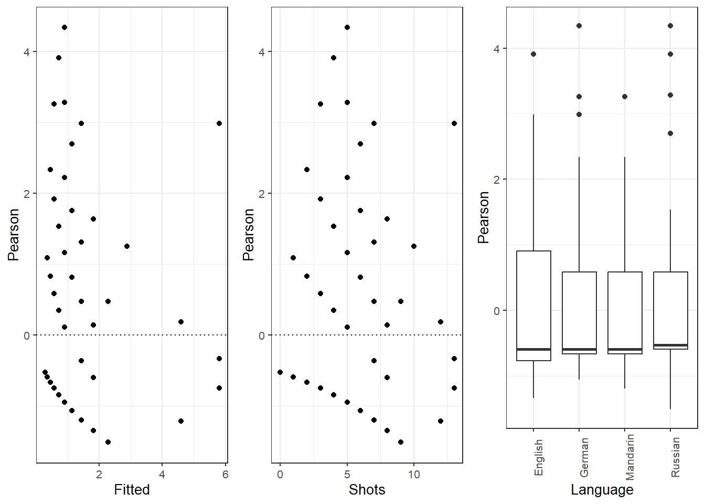
The diagnostic plots show problems as the dots in the first two plots are not random but show a pattern in the lower left corner. In addition, the variance of English (left boxplot) is notable larger than the variance of Russian (right boxplot). As a final step, we plot the predicted vales of the model to check if the predictions make sense.
plot_model(m1.glmer, type = "pred", terms = c("Shots"))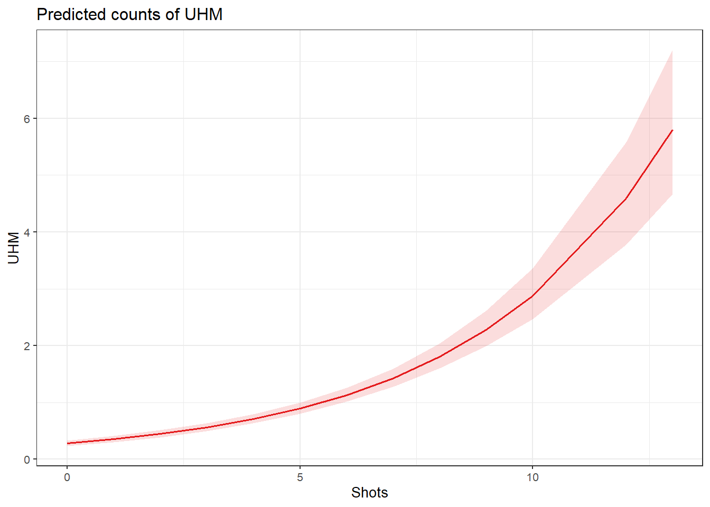
The model predicts that the instances of uhm increase with the number of shots. Note that the increase is not homogeneous as the y-axis labels indicate! We now compare the predicted number of uhm with the actually observed instances of uhm to check if the results of the model make sense.
countdata %>%
mutate(Predicted = predict(m1.glmer, type = "response")) %>%
dplyr::rename(Observed = UHM) %>%
tidyr::gather(Type, Frequency, c(Observed, Predicted)) %>%
dplyr::mutate(Shots = factor(Shots),
Type = factor(Type)) %>%
dplyr::group_by(Shots, Type) %>%
dplyr::summarize(Frequency = mean(Frequency)) %>%
ggplot(aes(Shots, Frequency, group = Type, color = Type, linetype = Type)) +
geom_line(size = 1.2) +
scale_color_manual(values = c("orange", "lightblue")) 
The comparison between the observed and the predicted uses of uhm becomes somewhat volatile and shows fluctuations after eight shots. We will now summarize the results as if the violations (overdispersion measure > 1 and excessive multicollinearity (singular fit)) had NOT occurred(!) - again: this is only because we are practicing here - this would be absolutely unacceptable in a proper write-up of an analysis!
The summary of the model can be extracted using the tab_model function from the sjPlot package (Lüdecke 2021).
sjPlot::tab_model(m1.glmer)| UHM | |||
|---|---|---|---|
| Predictors | Incidence Rate Ratios | CI | p |
| (Intercept) | 0.28 | 0.23 – 0.33 | <0.001 |
| Shots | 1.26 | 1.23 – 1.30 | <0.001 |
| Random Effects | |||
| σ2 | |||
| τ00 Language | 0.00 | ||
| N Language | 4 | ||
| Observations | 500 | ||
NOTE
The R2 values of the summary table are incorrect (as indicated by the missing conditional R2 value). The more appropriate conditional and marginal coefficient of determination for generalized mixed-effect models can be extracted using the r.squaredGLMM function from the MuMIn package (Barton 2020).
r.squaredGLMM(m1.glmer) R2m R2c
delta 0.2089107 0.2089107
lognormal 0.2949715 0.2949715
trigamma 0.1204196 0.1204196Also note that our model suffers from a serious problem (near singular fit). If this were not just an example, you should not(!) report this model!
Mixed-Effects Quasi-Possion Regression
The Quasi-Poisson Regression is a generalization of the Poisson regression and is used when modeling an overdispersed count variable. Poisson models are based on the Poisson distribution which is defined as a distribution where the variance is equal to the mean (which is very restrictive and not often the case). Quasi-Poisson models scale the standard errors which has a positive effect when dealing with overdispersed data.
Therefore, when the variance is greater than the mean, a Quasi-Poisson model, which assumes that the variance is a linear function of the mean, is more appropriate as it handles over-dispersed data better than normal Poisson-models.
We begin the model fitting process by creating a mixed- and a fixed-effects intercept-only base-line model. Unfortunately, there is not yet a procedure in place for quasi-Poisson models to test if the inclusion of random effects is justified. However, here the Boruta also provides valuable information: Language was only considered tentative but not important which suggests that it will not explain variance which means that including Language as a random effect may not be justified. This would require further inspection. Because we are only dealing with an example here, we ignore this fact (which you should not do in proper analyses) and continue right away with adding shots.
# base-line mixed-model
m0.qp = glmmPQL(UHM ~ 1, random = ~ 1 | Language, data = countdata,
family = quasipoisson(link='log'))iteration 1iteration 2iteration 3iteration 4# add Shots
m1.qp <- update(m0.qp, .~.+ Shots)iteration 1Anova(m1.qp, test = "Chi") # SIG! (p<0.0000000000000002 ***)Analysis of Deviance Table (Type II tests)
Response: zz
Chisq Df Pr(>Chisq)
Shots 276.45 1 < 2.2e-16 ***
---
Signif. codes: 0 '***' 0.001 '**' 0.01 '*' 0.05 '.' 0.1 ' ' 1The ANOVA confirms that Shots have a significant impact on the number of instances of uhm. We will now have a look at the model summary.
summary(m1.qp)Linear mixed-effects model fit by maximum likelihood
Data: countdata
AIC BIC logLik
NA NA NA
Random effects:
Formula: ~1 | Language
(Intercept) Residual
StdDev: 4.07595e-05 1.078013
Variance function:
Structure: fixed weights
Formula: ~invwt
Fixed effects: UHM ~ Shots
Value Std.Error DF t-value p-value
(Intercept) -1.2789297 0.09648863 495 -13.25472 0
Shots 0.2336302 0.01407957 495 16.59357 0
Correlation:
(Intr)
Shots -0.806
Standardized Within-Group Residuals:
Min Q1 Med Q3 Max
-1.4004176 -0.6182281 -0.5500712 0.5437319 4.0248289
Number of Observations: 500
Number of Groups: 4 The model summary does not provide much information such as,e.g. AIC or BIC values. The coefficient for Shots is highly significant (p <.001) and the data is notably over-dispersed (the Standardized Within-Group Residuals deviate substantially from a normal distribution with higher values having a thick tail). Also, in contrast to the Poisson model, Language does explain at least a minimal share of the variance now as the mean and standard deviation are no longer 0. Note also, that the coefficients are identical to the Poisson coefficients but the standard errors and p-values differ (the model provides t- rather than z-values).
In a next step, we will calculate the odds ratios of the coefficient (as we only have one). We will use the coefficients from the fixed-effects model as the coefficients for mixed- and fixed-effects models are identical (the random effect structure only affects the standard error and p-values but not the coefficients; you can check by uncommenting the summary command).
m1.glm = glm(UHM ~ Shots, data = countdata, family = quasipoisson(link='log'))
exp(coef(m1.glm))(Intercept) Shots
0.2783386 1.2631744 The standardized or \(\beta\)-coefficient tells us that the likelihood of uhm increases by 1.26 (or 26.32 percent) with each additional shot.
Before inspecting the relationship between Shots and uhm, we will check if the overdispersion was reduced.
# extract pearson residuals
PearsonResiduals <- resid(m1.qp, type = "pearson")
# extract number of cases in model
Cases <- nrow(countdata)
# extract number of predictors (plus intercept)
NumberOfPredictors <- length(fixef(m1.qp)) +1
# calculate overdispersion
Overdispersion <- sum(PearsonResiduals^2) / (Cases-NumberOfPredictors)
# inspect overdispersion
Overdispersion[1] 1.006036The overdispersion has indeed decreased and is not so close to 1 that overdispersion is no longer an issue.
We continue to diagnose the model by plotting the Pearson’s residuals against fitted values. This diagnostic plot should not show a funnel-like structure or patterning as we observed in the case of the Poisson model.
# diagnostic plot
plot(m1.qp, pch = 20, col = "black", lty= "dotted", ylab = "Pearson's residuals")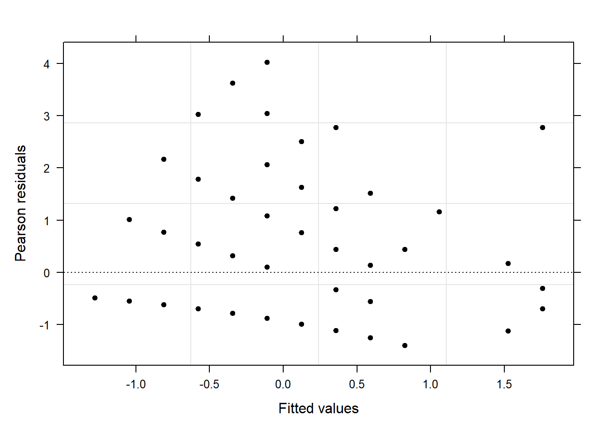
Indeed, the plot exhibits a (slight) funnel shape (but not drastically so) and thus indicates heteroscedasticity. However, the patterning that we observed with the Poisson model has disappeared. We continue by plotting the random effect adjustments.
# generate diagnostic plots
plot(m1.qp, Language ~ resid(.), abline = 0, fill = "gray70") 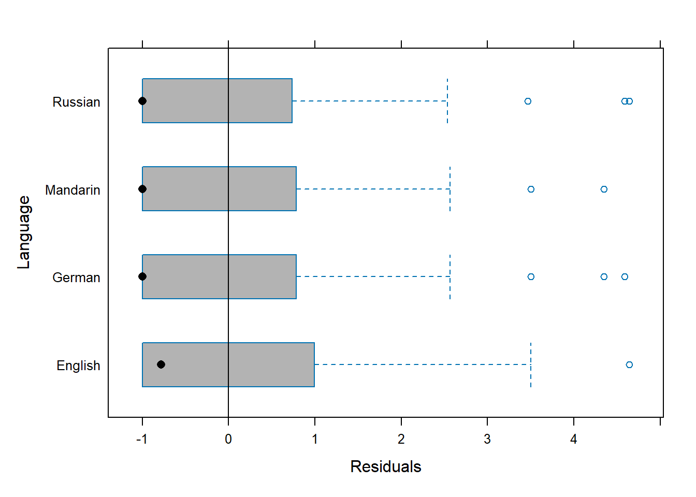
The adjustments by “Language” are marginal (which was somewhat expected given that Language was only deemed tentative), which shows that there is very little variation between the languages and that we have no statistical reason to include Language as a random effect.
In a final step, we plot the fixed-effect of Shots using the predictorEffects function from the effects package (Fox and Weisberg 2019).
plot_model(m1.qp, type = "pred", terms = c("Shots"))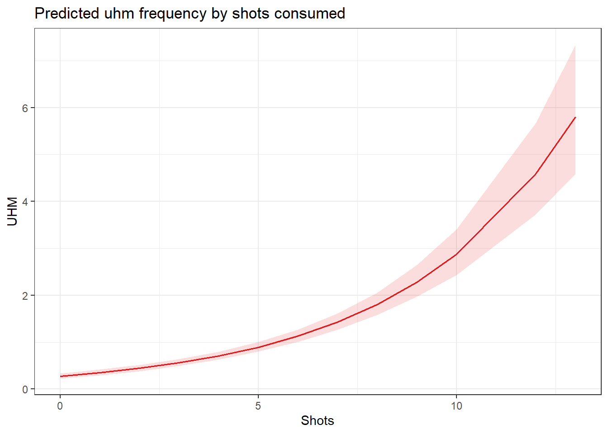
The effects plot shows that the number of uhms increases exponentially with the number of shots a speaker has had. We now compare the predicted number of uhm with the actually observed instances of uhm to check if the results of the model make sense.
countdata %>%
mutate(Predicted = predict(m1.qp, type = "response")) %>%
dplyr::rename(Observed = UHM) %>%
tidyr::gather(Type, Frequency, c(Observed, Predicted)) %>%
dplyr::mutate(Shots = factor(Shots),
Type = factor(Type)) %>%
dplyr::group_by(Shots, Type) %>%
dplyr::summarize(Frequency = mean(Frequency)) %>%
ggplot(aes(Shots, Frequency, group = Type, color = Type, linetype = Type)) +
geom_line(size = 1.2) +
scale_color_manual(values = c("orange", "lightblue")) 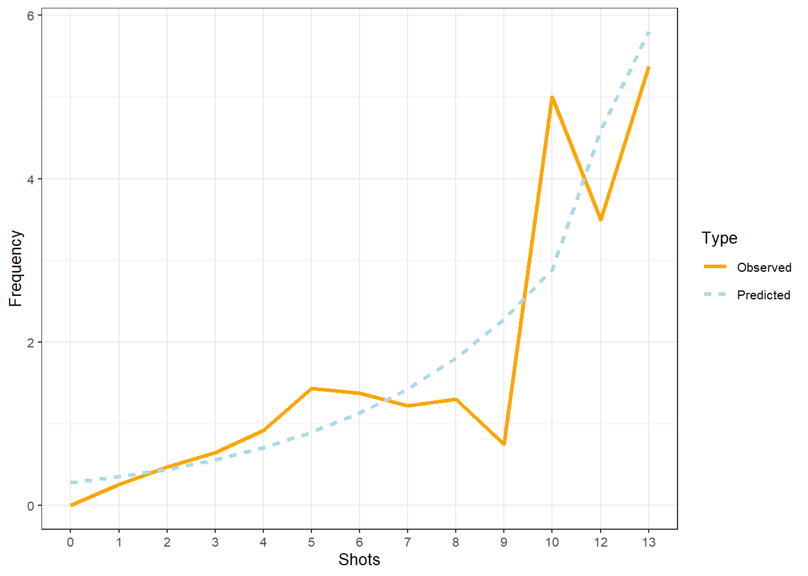
Given that the overdispersion measure of this Quasi-Poisson model is close to 1, that the model did not suffer from excessive multicollinearity (singular fit), and because this model shows improvements compared to the Poisson model with respect to the model diagnostics (some adjustments by Language and less patterning in the diagnostic plots), we would choose this quasi-Poisson model over the Poisson model.
Finally, we extract the summary table of this model.
sjPlot::tab_model(m1.qp)| UHM | |||
|---|---|---|---|
| Predictors | Incidence Rate Ratios | CI | p |
| (Intercept) | 0.28 | 0.23 – 0.34 | <0.001 |
| Shots | 1.26 | 1.23 – 1.30 | <0.001 |
| Random Effects | |||
| σ2 | 0.00 | ||
| τ00 Language | 0.00 | ||
| N Language | 4 | ||
| Observations | 500 | ||
| Marginal R2 / Conditional R2 | 1.000 / NA | ||
NOTE
The R2 values of the summary table are incorrect (as indicated by the missing conditional R2 value). The more appropriate conditional and marginal coefficient of determination for generalized mixed-effect models can be extracted using the r.squaredGLMM function from the MuMIn package (Barton 2020).
r.squaredGLMM(m1.qp) R2m R2c
delta 0.18569419 0.18569419
lognormal 0.27527640 0.27527640
trigamma 0.09770407 0.09770407Mixed-Effects Negative Binomial Regression
Negative binomial regression models are a generalization of Poisson regression which loosens the restrictive assumption that the variance is equal to the mean made by the Poisson model. This is a major advantage as the most common issue that one faces with Poisson regressions is that the data deviate too substantially from the assumed Poisson distribution.
To implement a Negative-Binomial Mixed-Effects Regression, we first create a mixed-effects intercept-only baseline model and then test if including Shots significantly improves model fit and, thus, has a significant impact on the number of uhms.
# base-line mixed-model
m0.nb = glmer.nb(UHM ~ 1 + (1 | Language), data = countdata)
# add Shots
m1.nb <- update(m0.nb, .~.+ Shots)boundary (singular) fit: see help('isSingular')anova(m1.nb, m0.nb) Data: countdata
Models:
m0.nb: UHM ~ 1 + (1 | Language)
m1.nb: UHM ~ (1 | Language) + Shots
npar AIC BIC logLik deviance Chisq Df Pr(>Chisq)
m0.nb 3 1159.0 1171.6 -576.5 1153.0
m1.nb 4 1051.6 1068.5 -521.8 1043.6 109.41 1 < 2.2e-16 ***
---
Signif. codes: 0 '***' 0.001 '**' 0.01 '*' 0.05 '.' 0.1 ' ' 1The negative-binomial model also reports a significant impact of shots on the number of uhms. In a next step, we calculate the overdispersion.
# extract pearson residuals
PearsonResiduals <- resid(m1.nb, type = "pearson")
# extract number of betas + predictors + sigma
NumberOfPredictors <- 2+1+1
# extract number of cases in model
Cases <- nrow(countdata)
# calculate overdispersion parameter
Overdispersion <- sum(PearsonResiduals^2) / (Cases / NumberOfPredictors)# show overdispersion parameter
Overdispersion[1] 2.469492The overdispersion has increased which is rather suboptimal. In this case, we would report the Quasi-Poisson Regression rather than the Negative Binomial Model (which is rather rare as Negative Binomial Models typically perform better than (Quasi-)Poisson models. However, this tutorial focuses merely on how to implement a Negative Binomial Mixed-Effects Regression and we thus continue with generating diagnostic plots to check for problems.
diag_data <- data.frame(PearsonResiduals, fitted(m1.nb)) %>%
dplyr::rename(Pearson = 1,
Fitted = 2)
p9 <- ggplot(diag_data, aes(x = Fitted, y = Pearson)) +
geom_point() +
geom_hline(yintercept = 0, linetype = "dotted")
p10 <- ggplot(countdata, aes(x = Shots, y = diag_data$Pearson)) +
geom_point() +
geom_hline(yintercept = 0, linetype = "dotted") +
labs(y = "Pearson")
p11 <- ggplot(countdata, aes(x = Language, y = diag_data$Pearson)) +
geom_boxplot() +
labs(y = "Pearson") +
theme(axis.text.x = element_text(angle=90))
gridExtra::grid.arrange(p9, p10, p11, nrow = 1)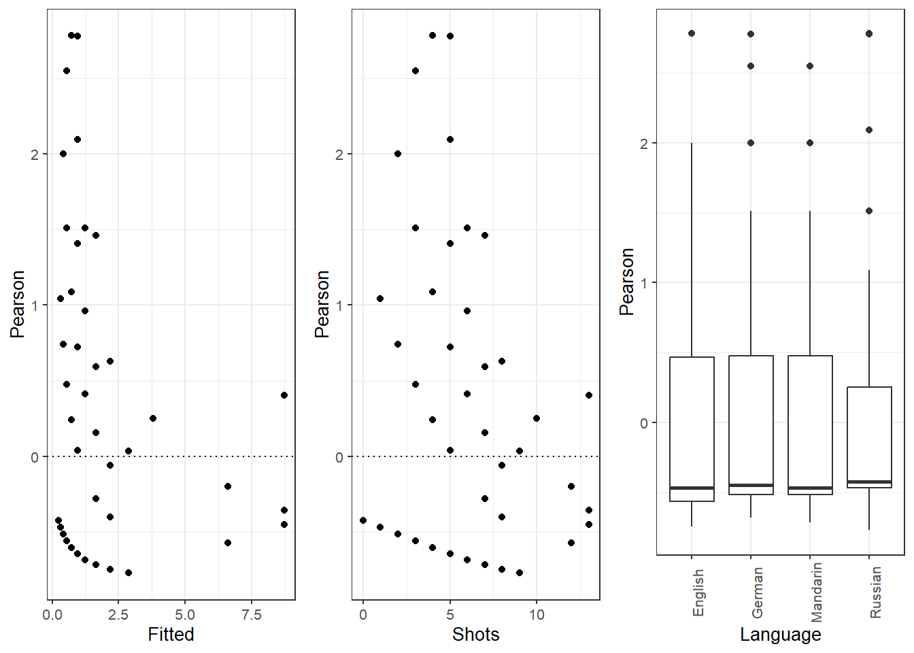
The diagnostics show patterning similar to the one we saw with the Poisson model which suggest that the negative binomial model is also not an optimal model for our data. We continue by plotting the predicted values and, subsequently, summarize the analysis.
plot_model(m1.nb, type = "pred", terms = c("Shots"))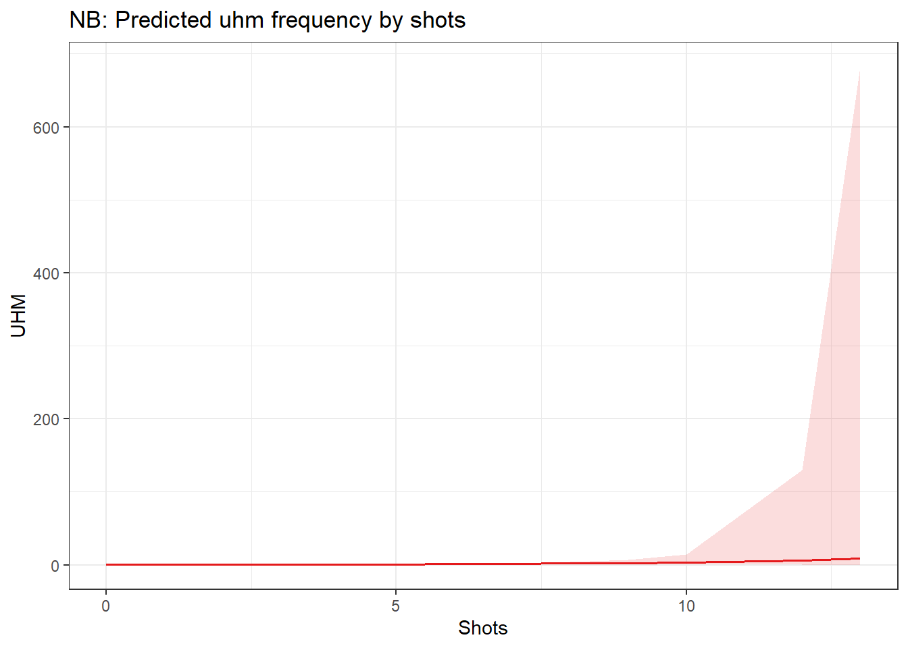
The effect plot shows that the predicted number of shots increases exponentially with each shot. We now compare the predicted number of uhm with the actually observed instances of uhm to check if the results of the model make sense.
countdata %>%
mutate(Predicted = predict(m1.nb, type = "response")) %>%
dplyr::rename(Observed = UHM) %>%
tidyr::gather(Type, Frequency, c(Observed, Predicted)) %>%
dplyr::mutate(Shots = factor(Shots),
Type = factor(Type)) %>%
dplyr::group_by(Shots, Type) %>%
dplyr::summarize(Frequency = mean(Frequency)) %>%
ggplot(aes(Shots, Frequency, group = Type, color = Type, linetype = Type)) +
geom_line(size = 1.2) +
scale_color_manual(values = c("orange", "lightblue")) 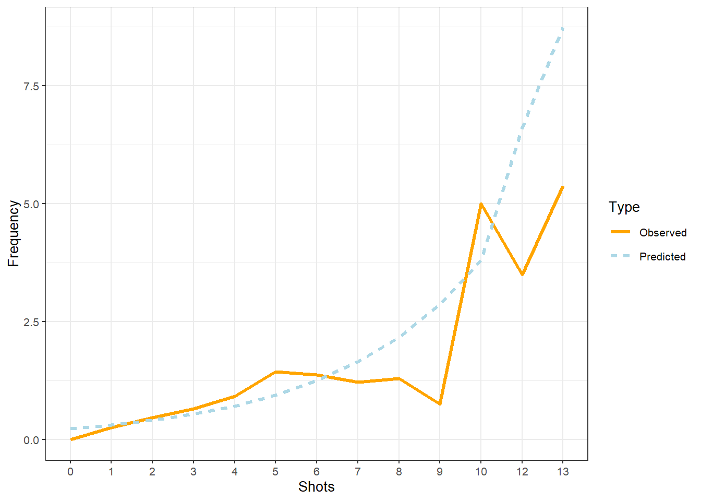
The comparison between the observed and the predicted uses of uhm becomes somewhat volatile and shows fluctuations after eight shots. We will now summarize the results as if the violations had NOT occurred(!) - again: this is only because we are practicing here - this would be absolutely unacceptable in a proper write-up of an analysis!
A mixed-effect negative binomial regression model which contained the language in which the conversation took place as random effect was fit to the data. Prior to the regression modeling, a Boruta analysis was applied to determine whether any of the predictors had a meaningful relationship with the dependent variable (instances of uhm). Since the Boruta analysis indicated that only the number of shots a speaker had was important, only “Shots” was tested during model fitting. The final minimal adequate model showed that the number of uhm as fillers increases significantly, and near-linearly with the number of shots speakers had (\(\chi\)2(1):83.0, p <.0001, \(\beta\): 0.2782). An inspection of the random effect structure conveyed that there was almost no variability between languages and language did not contribute meaningfully to the model fit.
Mixed-Effects Multinomial Regression
In this section, we will focus on how to implement a mixed-effects multinomial regression model using the mblogit function from the mclogit package (see Elff 2021). As we have already gone though model fitting and model validation procedures above, we will strictly see how to implement this type of model here - we will not go through all the other steps that a proper regression analysis would require.
We begin the analysis by loading the example data set. The data represents observations gathered during an experiment where speakers had to report what they saw. The responses are categorized into four groups:
# description data
pict <- base::readRDS("tutorials/regression/data/pict.rda", "rb")
# inspect
head(pict) Id Participant Group Item Response Gender Age
1 1 G001 German_Mono 1 NumeralNoun Male 18
2 2 G002 German_Mono 3 NumeralNoun Male 18
3 3 G003 German_Mono 4 NumeralNoun Male 18
4 4 G004 German_Mono 6 QuantAdjNoun Male 18
5 5 G005 German_Mono 8 NumeralNoun Male 18
6 6 G006 German_Mono 9 QuantAdjNoun Male 18In a first step, we generate a baseline model that we call m0. This model only contains the random effect structure and the intercept as the sole predictor.
m0.mn <- mblogit(formula = Response ~ 1,
random = ~ 1 | Participant,
data = pict)
Iteration 1 - deviance = 2452.166 - criterion = 0.8403468
Iteration 2 - deviance = 2412.755 - criterion = 0.06460136
Iteration 3 - deviance = 2411.269 - criterion = 0.005347312
Iteration 4 - deviance = 2411.258 - criterion = 4.463874e-05
Iteration 5 - deviance = 2411.258 - criterion = 3.140595e-09
convergedIn this case, the algorithm did not converge properly - if this were a real analysis, we could not simply continue but would have to inspect possible causes for this. However, as this is just a showcase, we will ignore this and move on. Next, we add the fixed effects (Gender and Group).
m1.mn <- mblogit(formula = Response ~ Gender + Group,
random = ~ 1 | Item,
data = pict)
Iteration 1 - deviance = 1652.545 - criterion = 0.800708
Iteration 2 - deviance = 1571.221 - criterion = 0.08148998
Iteration 3 - deviance = 1551.91 - criterion = 0.02744697
Iteration 4 - deviance = 1547.298 - criterion = 0.005126671
Iteration 5 - deviance = 1546.022 - criterion = 0.0001735434
Iteration 6 - deviance = 1545.833 - criterion = 2.449264e-07
Iteration 7 - deviance = 1545.828 - criterion = 7.855714e-13
convergedNow, we can compare the models to see if including the fixed-effects into the model has significantly improved the model fit.
anova(m0.mn, m1.mn)Analysis of Deviance Table
Model 1: Response ~ 1
Model 2: Response ~ Gender + Group
Resid. Df Resid. Dev Df Deviance
1 3261 2411.3
2 3249 1545.8 12 865.43As the second model is significantly better, we are justified to believe that our fixed effects have explanatory power. We can now use the getSummary.mmblogit function to get a summary of the model with the fixed effects.
# inspect
mclogit::getSummary.mmblogit(m1.mn)$coef
, , NumeralNoun/BareNoun
est se stat p lwr
(Intercept) 1.09405370 0.7953485 1.3755652 1.689563e-01 -0.4648006
GenderMale 0.06916761 0.1968517 0.3513691 7.253114e-01 -0.3166546
GroupGerman_Mono -3.29090559 0.3042134 -10.8177541 2.836428e-27 -3.8871529
GroupL2_Advanced -0.45752325 0.3075059 -1.4878518 1.367900e-01 -1.0602238
GroupL2_Intermediate -1.16896033 0.3204864 -3.6474572 2.648484e-04 -1.7971021
upr
(Intercept) 2.6529080
GenderMale 0.4549899
GroupGerman_Mono -2.6946583
GroupL2_Advanced 0.1451773
GroupL2_Intermediate -0.5408186
, , QuantAdjNoun/BareNoun
est se stat p lwr
(Intercept) 0.5954957 0.4982853 1.195090 2.320519e-01 -0.3811256
GenderMale 0.2998948 0.2483241 1.207675 2.271724e-01 -0.1868116
GroupGerman_Mono -3.8569074 0.3763765 -10.247472 1.214790e-24 -4.5945918
GroupL2_Advanced -2.1949538 0.3472420 -6.321106 2.596971e-10 -2.8755356
GroupL2_Intermediate -3.0167282 0.3981403 -7.577047 3.535080e-14 -3.7970689
upr
(Intercept) 1.5721170
GenderMale 0.7866011
GroupGerman_Mono -3.1192231
GroupL2_Advanced -1.5143719
GroupL2_Intermediate -2.2363875
, , QuantNoun/BareNoun
est se stat p lwr
(Intercept) -2.1631212 0.7535393 -2.8706151 0.004096740 -3.640031
GenderMale -0.3712899 0.4300454 -0.8633737 0.387932047 -1.214163
GroupGerman_Mono -2.4209250 0.8137622 -2.9749784 0.002930092 -4.015870
GroupL2_Advanced 0.7896096 0.6837532 1.1548168 0.248165475 -0.550522
GroupL2_Intermediate -0.1487892 0.7393258 -0.2012498 0.840503226 -1.597841
upr
(Intercept) -0.6862114
GenderMale 0.4715836
GroupGerman_Mono -0.8259804
GroupL2_Advanced 2.1297412
GroupL2_Intermediate 1.3002628
$Item
, , 1
est se stat p lwr upr
NumeralNoun/BareNoun: VCov(~1,~1) 5.460194 26.17668 NA NA NA NA
QuantAdjNoun/BareNoun: VCov(~1,~1) -1.638047 NaN NA NA NA NA
QuantNoun/BareNoun: VCov(~1,~1) 1.634060 11.58423 NA NA NA NA
, , 2
est se stat p lwr upr
NumeralNoun/BareNoun: VCov(~1,~1) -1.6380467 NaN NA NA NA NA
QuantAdjNoun/BareNoun: VCov(~1,~1) 1.6062896 NaN NA NA NA NA
QuantNoun/BareNoun: VCov(~1,~1) 0.4990325 2.364537 NA NA NA NA
, , 3
est se stat p lwr upr
NumeralNoun/BareNoun: VCov(~1,~1) 1.6340599 11.584229 NA NA NA NA
QuantAdjNoun/BareNoun: VCov(~1,~1) 0.4990325 2.364537 NA NA NA NA
QuantNoun/BareNoun: VCov(~1,~1) 1.5123774 NaN NA NA NA NA
$Groups
Groups by Item
10
$sumstat
LR df deviance McFadden Cox.Snell Nagelkerke
1476.2940146 21.0000000 1545.8276926 0.4884959 0.7418974 0.7913572
AIC BIC N
1587.8276926 1692.7002851 1090.0000000
$call
mblogit(formula = Response ~ Gender + Group, data = pict, random = ~1 |
Item)
$contrasts
$contrasts$Gender
[1] "contr.treatment"
$contrasts$Group
[1] "contr.treatment"
$xlevels
$xlevels$Gender
[1] "Female" "Male"
$xlevels$Group
[1] "English_Mono" "German_Mono" "L2_Advanced" "L2_Intermediate"The NAs (not available information) is a result of the model having a bad fit to the data and, optimally, we would need to inspect why the model has a bad fit. Again, we ignore this and move on. Next, we check the VIFs to see if the model does not violate multicollinearity assumptions.
car::vif(m1.mn) # maybe use cut-off of 5 (maybe 10) GVIF Df GVIF^(1/(2*Df))
Gender 3.596714 1 1.896501
Group 9.945939 3 1.466474The VIFs are a bit high - especially the GVIF for Group would be a cause for concern if this was not just a demo analysis! However, as we only want to implement a multinomial mixed-effects model here and not provide a proper, clean analysis, we will ignore this issue here.
In a next step, we visualize effects to get a better understanding of how the predictors that are part of the fixed-effect structure of the mode affect the outcome (the response variable).
sjPlot::plot_model(m1.mn)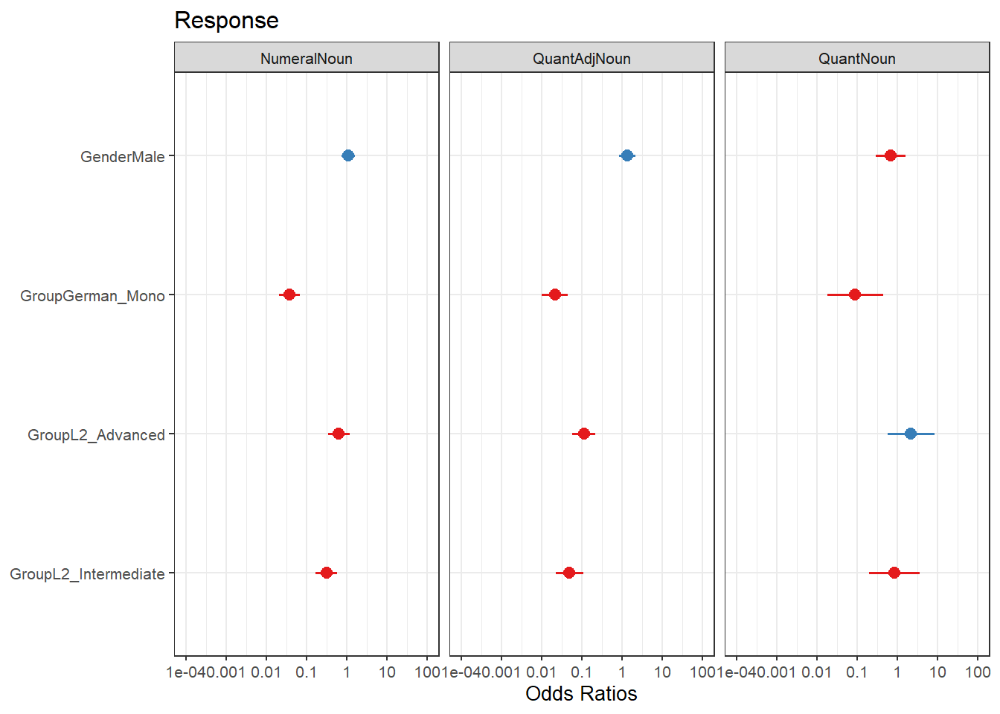
Finally, we can extract an alternative summary table produced by the tab_model function from the sjPlot package (see Lüdecke 2021).
sjPlot::tab_model(m1.mn)| Response: NumeralNoun | Response: QuantAdjNoun | Response: QuantNoun | |||||||
|---|---|---|---|---|---|---|---|---|---|
| Predictors | Odds Ratios | CI | p | Odds Ratios | CI | p | Odds Ratios | CI | p |
| (Intercept) | 2.99 | 0.63 – 14.20 | 0.169 | 1.81 | 0.68 – 4.82 | 0.232 | 0.11 | 0.03 – 0.50 | 0.004 |
| GenderMale | 1.07 | 0.73 – 1.58 | 0.725 | 1.35 | 0.83 – 2.20 | 0.227 | 0.69 | 0.30 – 1.60 | 0.388 |
| GroupGerman_Mono | 0.04 | 0.02 – 0.07 | <0.001 | 0.02 | 0.01 – 0.04 | <0.001 | 0.09 | 0.02 – 0.44 | 0.003 |
| GroupL2_Advanced | 0.63 | 0.35 – 1.16 | 0.137 | 0.11 | 0.06 – 0.22 | <0.001 | 2.20 | 0.58 – 8.42 | 0.248 |
| GroupL2_Intermediate | 0.31 | 0.17 – 0.58 | <0.001 | 0.05 | 0.02 – 0.11 | <0.001 | 0.86 | 0.20 – 3.67 | 0.841 |
| N Item | 10 | ||||||||
| Observations | 1090 | ||||||||
This is the final step in implementing a a mixed-effects multinomial regression model using the mblogit function from the mclogit package (see Elff 2021). We are aware that the analysis shown here is supervifial(!) - but please keep in mind that we just wanted to showcase the implementation here rather than providing a properly and carefully done analysis.
Mixed-Effects Ordinal Regression
In this section, we will strictly focus on how to implement a mixed-effects ordinal regression model using the clmm function from the ordinal package (see Christensen 2019). This type of regression model is extremely useful when dealing with Likert data or other types of questionnaire and survey data where the responses have some kind of hierarchical structure (i.e. responses are not truly independent because they come from different points in time or from different regions). load data
# rating experiment data
ratex <- base::readRDS("tutorials/regression/data/ratex.rda", "rb")
# inspect data
head(ratex) Rater Child Group Accent AccentNumeric Family
1 R1 C001 Child StrongAccent 2 DomBilingual
2 R2 C001 Child StrongAccent 2 DomBilingual
3 R3 C001 Child StrongAccent 2 DomBilingual
4 R4 C001 Child StrongAccent 2 DomBilingual
5 R5 C001 Child StrongAccent 2 DomBilingual
6 R6 C001 Child StrongAccent 2 DomBilingualWe now tabulate the data to get a better understanding of the data structure.
ratex %>%
dplyr::group_by(Family, Accent) %>%
dplyr::summarise(Frequency = n()) %>%
tidyr::spread(Accent, Frequency)`summarise()` has grouped output by 'Family'. You can override using the
`.groups` argument.# A tibble: 3 × 4
# Groups: Family [3]
Family NoAccent StrongAccent WeakAccent
<fct> <int> <int> <int>
1 DomBilingual 80 145 174
2 EqualBilingual 20 22 63
3 Monolingual 209 1 41Next, we visualize the data to inspect its properties.
ratex %>%
ggplot(aes(Family, AccentNumeric, color = Group)) +
stat_summary(fun = mean, geom = "point") +
stat_summary(fun.data = mean_cl_boot, geom = "errorbar", width = 0.2) +
theme_bw() +
theme(legend.position = "top") +
scale_color_manual(values = c("gray20", "gray70"))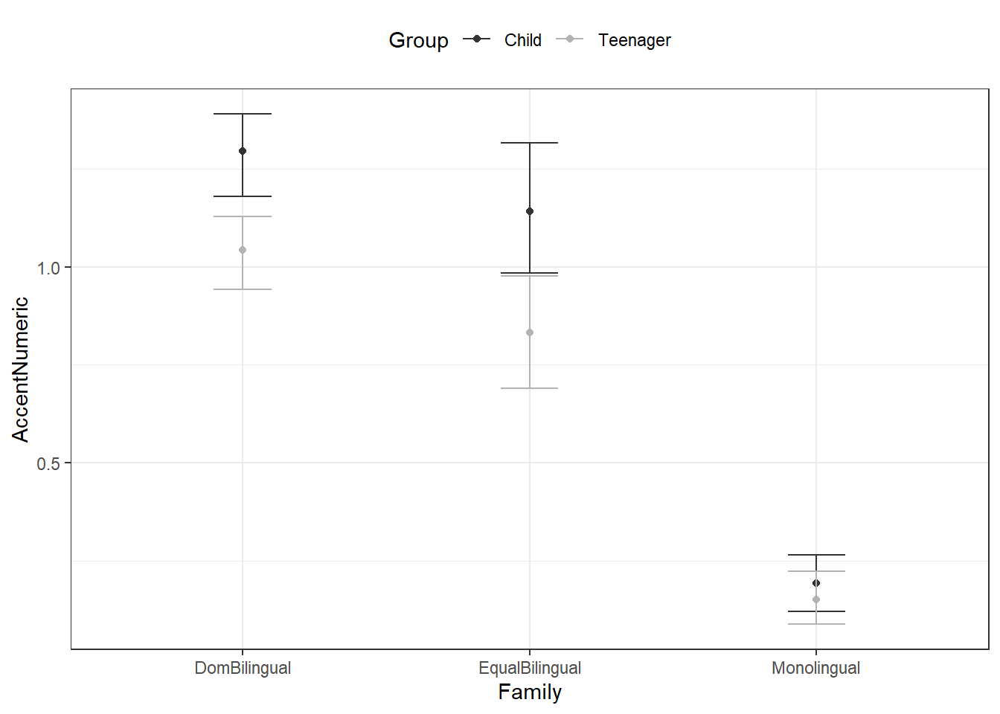
An alternative plot shows other properties of the data.
ratex %>%
dplyr::group_by(Family, Rater, Group) %>%
dplyr::summarise(AccentMean = mean(AccentNumeric)) %>%
ggplot(aes(Family, AccentMean, fill = Group)) +
geom_boxplot() +
theme_bw() +
theme(legend.position = "top") +
scale_fill_manual(values = c("gray50", "gray85"))`summarise()` has grouped output by 'Family', 'Rater'. You can override using
the `.groups` argument.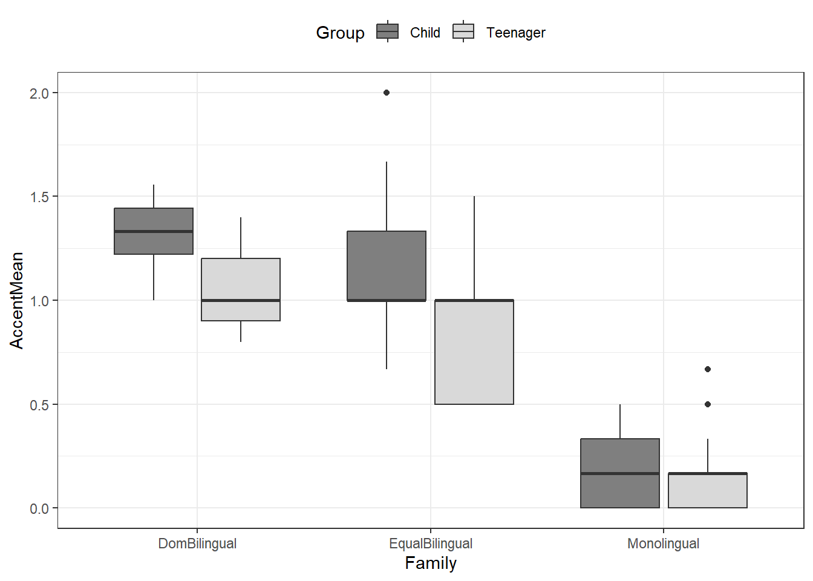
We now start the modeling by generating a model with Family as the sole predictor.
# fit baseline model
m1.or <- clmm(Accent ~ (1|Rater) + Family, link="logit", data = ratex)
# test for incomplete information
ifelse(min(ftable(ratex$Accent, ratex$Family)) == 0, "incomplete information", "okay")[1] "okay"# extract aic
aic.glmer <- AIC(logLik(m1.or))
# inspect aic
aic.glmer[1] 1380.259# summarize model
summary(m1.or)Cumulative Link Mixed Model fitted with the Laplace approximation
formula: Accent ~ (1 | Rater) + Family
data: ratex
link threshold nobs logLik AIC niter max.grad cond.H
logit flexible 755 -685.13 1380.26 371(435) 3.04e-07 2.9e+05
Random effects:
Groups Name Variance Std.Dev.
Rater (Intercept) 3.534e-09 5.945e-05
Number of groups: Rater 21
Coefficients:
Estimate Std. Error z value Pr(>|z|)
FamilyEqualBilingual 0.4777 0.2143 2.229 0.0258 *
FamilyMonolingual -2.5502 0.1989 -12.825 <2e-16 ***
---
Signif. codes: 0 '***' 0.001 '**' 0.01 '*' 0.05 '.' 0.1 ' ' 1
Threshold coefficients:
Estimate Std. Error z value
NoAccent|StrongAccent -1.07981 0.10580 -10.206
StrongAccent|WeakAccent 0.10609 0.09514 1.115We can now perform Post-Hoc tests to see which comparisons are significant.
lsmeans(m1.or, pairwise~Family, adjust="tukey")$lsmeans
Family lsmean SE df asymp.LCL asymp.UCL
DomBilingual 0.487 0.0914 Inf 0.308 0.666
EqualBilingual 0.965 0.1950 Inf 0.582 1.347
Monolingual -2.063 0.1740 Inf -2.404 -1.722
Confidence level used: 0.95
$contrasts
contrast estimate SE df z.ratio p.value
DomBilingual - EqualBilingual -0.478 0.214 Inf -2.229 0.0664
DomBilingual - Monolingual 2.550 0.199 Inf 12.825 <.0001
EqualBilingual - Monolingual 3.028 0.265 Inf 11.438 <.0001
P value adjustment: tukey method for comparing a family of 3 estimates Finally, we can summarize the model.
sjPlot::tab_model(m1.or)| Accent | |||
|---|---|---|---|
| Predictors | Odds Ratios | CI | p |
| NoAccent|StrongAccent | 0.34 | 0.28 – 0.42 | <0.001 |
| StrongAccent|WeakAccent | 1.11 | 0.92 – 1.34 | 0.265 |
| Family [EqualBilingual] | 1.61 | 1.06 – 2.45 | 0.026 |
| Family [Monolingual] | 0.08 | 0.05 – 0.12 | <0.001 |
| Random Effects | |||
| σ2 | 3.29 | ||
| τ00 Rater | 0.00 | ||
| N Rater | 21 | ||
| Observations | 755 | ||
| Marginal R2 / Conditional R2 | 0.325 / NA | ||
And we can visualize the effects.
plot_model(m1.or, type = "pred", terms = c("Family"))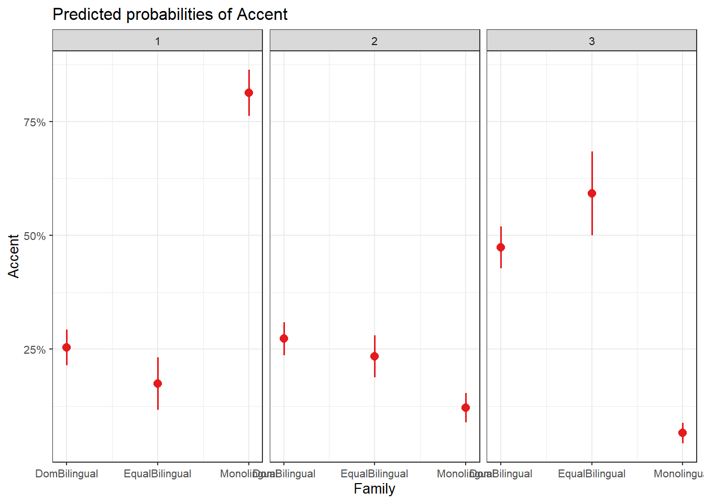
That’s it for this tutorial. We hope that you have enjoyed this tutorial and learned how to perform regression analysis including model fitting and model diagnostics as well as reporting regression results.
Citation & Session Info
Schweinberger, Martin. 2025. Mixed-Effects Models in R. Brisbane: The University of Queensland. url: https://ladal.edu.au/tutorials/regression.html (Version 2025.04.02).
@manual{schweinberger2025regression,
author = {Schweinberger, Martin},
title = {Mixed-Effects Models in R},
note = {tutorials/regression/regression.html},
year = 2025,
organization = "The University of Queensland, Australia. School of Languages and Cultures},
address = {Brisbane},
edition = {2025.04.02}
}sessionInfo()R version 4.4.2 (2024-10-31 ucrt)
Platform: x86_64-w64-mingw32/x64
Running under: Windows 11 x64 (build 26100)
Matrix products: default
locale:
[1] LC_COLLATE=English_United States.utf8
[2] LC_CTYPE=English_United States.utf8
[3] LC_MONETARY=English_United States.utf8
[4] LC_NUMERIC=C
[5] LC_TIME=English_United States.utf8
time zone: Australia/Brisbane
tzcode source: internal
attached base packages:
[1] grid stats graphics grDevices datasets utils methods
[8] base
other attached packages:
[1] see_0.10.0 performance_0.13.0 gridExtra_2.3
[4] vcd_1.4-13 tibble_3.2.1 stringr_1.5.1
[7] sjPlot_2.8.17 robustbase_0.99-4-1 rms_7.0-0
[10] ordinal_2023.12-4.1 nlme_3.1-166 MuMIn_1.48.4
[13] mclogit_0.9.6 MASS_7.3-61 lme4_1.1-36
[16] Matrix_1.7-2 knitr_1.49 Hmisc_5.2-2
[19] ggfortify_0.4.17 glmulti_1.0.8 leaps_3.2
[22] rJava_1.0-11 emmeans_1.10.7 effects_4.2-2
[25] car_3.1-3 carData_3.0-5 Boruta_8.0.0
[28] vip_0.4.1 ggpubr_0.6.0 ggplot2_3.5.1
[31] flextable_0.9.7 dplyr_1.1.4
loaded via a namespace (and not attached):
[1] RColorBrewer_1.1-3 rstudioapi_0.17.1 jsonlite_1.9.0
[4] datawizard_1.0.0 magrittr_2.0.3 TH.data_1.1-3
[7] estimability_1.5.1 farver_2.1.2 nloptr_2.1.1
[10] rmarkdown_2.29 ragg_1.3.3 vctrs_0.6.5
[13] minqa_1.2.8 effectsize_1.0.0 askpass_1.2.1
[16] base64enc_0.1-3 rstatix_0.7.2 forcats_1.0.0
[19] htmltools_0.5.8.1 polspline_1.1.25 haven_2.5.4
[22] survey_4.4-2 broom_1.0.7 sjmisc_2.8.10
[25] Formula_1.2-5 htmlwidgets_1.6.4 sandwich_3.1-1
[28] zoo_1.8-13 uuid_1.2-1 lifecycle_1.0.4
[31] iterators_1.0.14 pkgconfig_2.0.3 sjlabelled_1.2.0
[34] R6_2.6.1 fastmap_1.2.0 rbibutils_2.3
[37] digest_0.6.37 numDeriv_2016.8-1.1 colorspace_2.1-1
[40] textshaping_1.0.0 labeling_0.4.3 mgcv_1.9-1
[43] abind_1.4-8 compiler_4.4.2 fontquiver_0.2.1
[46] withr_3.0.2 htmlTable_2.4.3 backports_1.5.0
[49] DBI_1.2.3 ggsignif_0.6.4 quantreg_6.00
[52] openssl_2.3.2 sjstats_0.19.0 ucminf_1.2.2
[55] tools_4.4.2 ranger_0.17.0 lmtest_0.9-40
[58] foreign_0.8-87 zip_2.3.2 nnet_7.3-19
[61] glue_1.8.0 checkmate_2.3.2 cluster_2.1.6
[64] generics_0.1.3 gtable_0.3.6 tidyr_1.3.1
[67] hms_1.1.3 data.table_1.17.0 utf8_1.2.4
[70] xml2_1.3.6 memisc_0.99.31.8.2 foreach_1.5.2
[73] pillar_1.10.1 mitools_2.4 splines_4.4.2
[76] lattice_0.22-6 renv_1.1.1 survival_3.7-0
[79] SparseM_1.84-2 tidyselect_1.2.1 fontLiberation_0.1.0
[82] fontBitstreamVera_0.1.1 reformulas_0.4.0 report_0.6.1
[85] stats4_4.4.2 xfun_0.51 DEoptimR_1.1-3-1
[88] stringi_1.8.4 yaml_2.3.10 boot_1.3-31
[91] evaluate_1.0.3 codetools_0.2-20 officer_0.6.7
[94] gdtools_0.4.1 cli_3.6.4 rpart_4.1.23
[97] parameters_0.24.1 xtable_1.8-4 systemfonts_1.2.1
[100] Rdpack_2.6.2 munsell_0.5.1 Rcpp_1.0.14
[103] ggeffects_2.2.0 coda_0.19-4.1 MatrixModels_0.5-3
[106] bayestestR_0.15.2 mvtnorm_1.3-3 scales_1.3.0
[109] insight_1.0.2 purrr_1.0.4 rlang_1.1.5
[112] cowplot_1.1.3 multcomp_1.4-28 References
Austin, Peter C., and George Leckie. 2018. “The Effect of Number of Clusters and Cluster Size on Statistical Power and Type i Error Rates When Testing Random Effects Variance Components in Multilevel Linear and Logistic Regression Models.” Journal of Statistical Computation and Simulation 88: 3151–63. https://doi.org/https://doi.org/10.1080/00949655.2018.1504945.
Baayen, R Harald. 2008. Analyzing Linguistic Data. A Practical Introduction to Statistics Using r. Cambridge: Cambridge University press.
Barton, Kamil. 2020. MuMIn: Multi-Model Inference. https://CRAN.R-project.org/package=MuMIn.
Bartoń, Kamil. 2020. “Package MuMIn - Multi-Model Inference.” The Comprehensive R Archive Network. https://cran.r-project.org/web/packages/MuMIn/MuMIn.pdf.
Bates, Douglas, Martin Mächler, Ben Bolker, and Steven Walker. 2015. “Fitting Linear Mixed-Effects Models Using Lme4.” Journal of Statistical Software 67 (1): 1–48. https://doi.org/10.18637/jss.v067.i01.
Bell, Bethany A., John M. Ferron, and Jeffrey D. Kromrey. 2008. “Cluster Size in Multilevel Models: The Impact of Sparse Data Structures on Point and Interval Estimates in Two-Level Models.” In JSM Proceedings. Section on Survey Research Methods, 1122–29. American Statistical Association Alexandria, VA.
Christensen, R. H. B. 2019. “Ordinal—Regression Models for Ordinal Data.”
Clarke, Philippa. 2008. “When Can Group Level Clustering Be Ignored? Multilevel Models Versus Single-Level Models with Sparse Data.” Journal of Epidemiology & Community Health 62 (8): 752–58. https://doi.org/https://doi.org/10.1136/jech.2007.060798.
Clarke, Philippa, and Blair Wheaton. 2007. “Addressing Data Sparseness in Contextual Population Research: Using Cluster Analysis to Create Synthetic Neighborhoods.” Sociological Methods & Research 35 (3): 311–51.
Elff, Martin. 2021. Mclogit: Multinomial Logit Models, with or Without Random Effects or Overdispersion. https://doi.org/https://doi.org/10.5281/zenodo.3892325.
Field, Andy, Jeremy Miles, and Zoe Field. 2012. Discovering Statistics Using r. Vol. 50. Sage. https://doi.org/https://doi.org/10.5860/choice.50-2114.
Fox, John, and Sanford Weisberg. 2019. An r Companion to Applied Regression, 3rd Edition. Thousand Oaks, CA. https://socialsciences.mcmaster.ca/jfox/Books/Companion/index.html.
Gries, Stefan Th. 2021. Statistics for Linguistics Using r: A Practical Introduction. Berlin & New York: Mouton de Gruyter.
Johnson, Daniel Ezra. 2009. “Getting Off the GoldVarb Standard: Introducing Rbrul for Mixed-Effects Variable Rule Analysis.” Language and Linguistics Compass 3 (1): 359–83. https://doi.org/https://doi.org/10.1111/j.1749-818x.2008.00108.x.
Lüdecke, Daniel. 2021. sjPlot: Data Visualization for Statistics in Social Science. https://doi.org/https://doi.org/10.5281/zenodo.1462253.
Maas, Cora JM, and Joop J Hox. 2005. “Sufficient Sample Sizes for Multilevel Modeling.” Methodology 1 (3): 86–92. https://doi.org/https://doi.org/10.1027/1614-2241.1.3.86.
Makowski, Dominique, Mattan S. Ben-Shachar, Indrajeet Patil, and Daniel Lüdecke. 2021. “Automated Results Reporting as a Practical Tool to Improve Reproducibility and Methodological Best Practices Adoption.” CRAN. https://github.com/easystats/report.
Pinheiro, J. C., and D. M. Bates. 2000. Mixed-Effects Models in s and s-PLUS. Statistics and Computing. New York: Springer.
Winter, Bodo. 2019. Statistics for Linguists: An Introduction Using r. Routledge. https://doi.org/https://doi.org/10.4324/9781315165547.
Zuur, Alain F., Joseph M. Hilbe, and Elena N. Ieno. 2013. A Beginner’s Guide to GLM and GLMM with. R. Beginner’s Guide Series. Newburgh, United Kingdom: Highland Statistics Ltd.
Footnotes
I’m extremely grateful to Stefan Thomas Gries who provided very helpful feedback and pointed out many errors in previous versions of this tutorial. All remaining errors are, of course, my own.↩︎